<!doctype html>
<html lang="en">
<head>
  <meta charset="utf-8">
  <meta name="viewport" content="width=device-width, initial-scale=1">
  <title>arxiv digest — 2026-09-16</title>
  <style>
:root {
  --bg: #ffffff;
  --fg: #1f2328;
  --muted: #59636e;
  --border: #d0d7de;
  --card: #f6f8fa;
  --link: #0969da;
}
body {
  max-width: 980px;
  margin: 0 auto;
  padding: 2rem 1rem 5rem;
  font-family: -apple-system, BlinkMacSystemFont, "Segoe UI", Helvetica, Arial, sans-serif;
  line-height: 1.55;
  color: var(--fg);
  background: var(--bg);
}
a { color: var(--link); }
img { max-width: 100%; height: auto; }
pre, code { background: var(--card); border-radius: 6px; }
pre { padding: 1rem; overflow-x: auto; }
blockquote { border-left: 4px solid var(--border); padding-left: 1rem; color: var(--muted); }
details { margin: 0.6rem 0; }
summary { cursor: pointer; font-weight: 600; }
.paper-figures-scroll {
  display: flex;
  gap: 1rem;
  overflow-x: auto;
  overscroll-behavior-x: contain;
  padding: 0.75rem 0.25rem 1rem;
  margin: 1rem 0 1.25rem;
  border-top: 1px solid var(--border);
  border-bottom: 1px solid var(--border);
  scroll-snap-type: x proximity;
}
.paper-figure-card {
  flex: 0 0 min(260px, 72vw);
  scroll-snap-align: start;
  background: var(--card);
  border: 1px solid var(--border);
  border-radius: 12px;
  padding: 0.55rem;
}
.paper-figure-card img {
  display: block;
  width: 100%;
  max-height: 240px;
  object-fit: contain;
  background: white;
  border-radius: 8px;
}
.paper-figure-caption {
  display: block;
  margin-top: 0.5rem;
  color: var(--muted);
  font-size: 0.85rem;
}
.figure-strip-hint {
  color: var(--muted);
  font-size: 0.9rem;
  margin-bottom: -0.3rem;
}
</style>
  <!-- MathJax: renders $...$ inline math and $$...$$ display math, plus
       \(...\) and \[...\]. Loaded from the official CDN; works offline
       once cached. Configured to skip code/pre blocks so arxiv IDs that
       look like dollar amounts don't get mangled. -->
  <script>
    window.MathJax = {
      tex: {
        inlineMath: [['$', '$'], ['\\(', '\\)']],
        displayMath: [['$$', '$$'], ['\\[', '\\]']],
        processEscapes: true,
        processEnvironments: true
      },
      options: {
        skipHtmlTags: ['script', 'noscript', 'style', 'textarea', 'pre', 'code'],
        ignoreHtmlClass: 'tex2jax_ignore',
        processHtmlClass: 'tex2jax_process'
      }
    };
  </script>
  <script id="MathJax-script" async
    src="https://cdn.jsdelivr.net/npm/mathjax@3/es5/tex-chtml.js"></script>
</head>
<body>
<header style="background-color: #333; color: white; padding: 15px; margin-bottom: 20px;">
  <h1 style="margin: 0; font-size: 24px;">
    <a href="https://ochelpan.github.io/arXiv_clean/" style="color: white; text-decoration: none;">Main</a>
  </h1>
</header>

<h1>Daily arXiv Report</h1>

<hr>
<p>
<a href="index.html">← Index</a>
 · <a href="papers_06.html">← Previous</a> · <a href="papers_08.html">Next →</a>
</p>
<hr>

<h2>Papers 121–140</h2>
<p><a id="paper-2609.14964"></a></p>
<h3 id="exact-breit-rabi-formulae-for-the-nitrogen-vacancy-center-in-diamond"><a href="http://arxiv.org/abs/2609.14964v1">Exact Breit-Rabi formulae for the nitrogen-vacancy center in diamond</a></h3>
<p><strong>Authors:</strong> Alex Tritt, Lincoln D. Turner, Michael S. J. Barson<br>
<strong>Type:</strong> theory · <strong>Category:</strong> quantum information and computing · <strong>PDF:</strong> <a href="https://arxiv.org/pdf/2609.14964v1">https://arxiv.org/pdf/2609.14964v1</a><br>
<strong>Analysis basis:</strong> full PDF text, analyzed in chunks
<strong>Topic relevance:</strong> <code>QC/QI experiment</code> <strong>2/5</strong></p>
<div class="figure-strip-hint">↔ Scroll figures horizontally</div>
<div class="paper-figures-scroll">
<figure class="paper-figure-card">
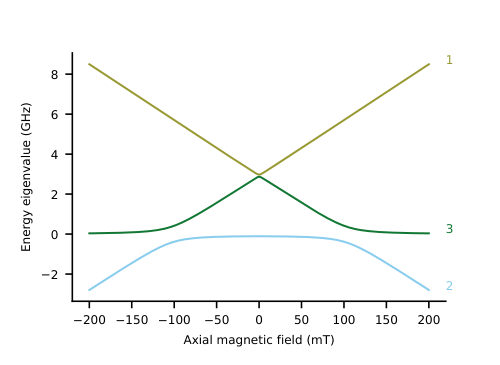
<figcaption class="paper-figure-caption"><b>Fig 1.</b> FIG. 1. Derived energy eigenvalues of the NV electron spin under a magnetic field with swept axial component Bz and a fixed transverse component of Bx = 20 mT. Curves are labeled as per Eq. (A1).</figcaption>
</figure>
<figure class="paper-figure-card">
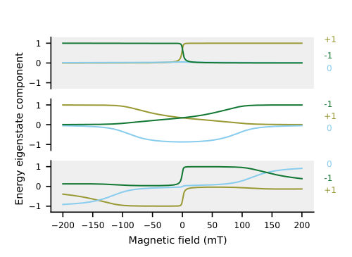
<figcaption class="paper-figure-caption"><b>Fig 2.</b> FIG. 2. Derived coefficients of energy eigenstates of the NV electron spin under a magnetic field with swept axial compo- nent Bz and a fixed transverse component of Bx = 20 mT. Subplots are states 1 through 3 from top to bottom, as per Eq. (A2). Coefficients are labeled by electron magnetic num- ber mS.</figcaption>
</figure>
<figure class="paper-figure-card">
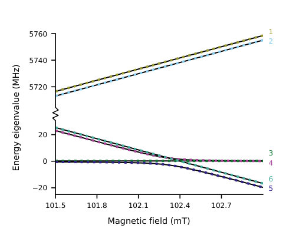
<figcaption class="paper-figure-caption"><b>Fig 3.</b> FIG. 3. Comparison between our derived analytic eigen- values (colored dots) and point wise numerical evaluations (black lines) for the 15N center at the GSLAC. Numbers on the right refer to the state labels of Eq. (B1). Derived ana- lytic curves and numerical evaluations were confirmed to be equal to float64 precision [23].</figcaption>
</figure>
<figure class="paper-figure-card">
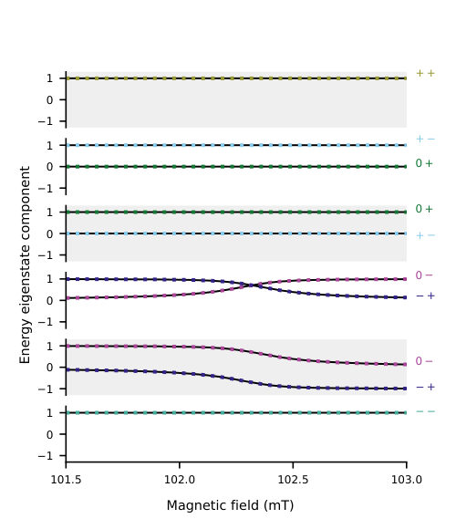
<figcaption class="paper-figure-caption"><b>Fig 4.</b> FIG. 4. Comparison between our derived analytic eigenvec- tors of Eq. (B2) (colored dots) and point wise numerical eval- uations (black lines) for the 15N center at the GSLAC. Each sub-figure corresponds to a different eigenstate of Eq. (B2), in ascending order of |1⟩at the top and |6⟩on the bottom. Each curve corresponds to the coefficient of the |mS, mI⟩la- beled on the right, with only non-zero coefficients are shown. Derived analytic coefficients and numerical evaluations were confirmed to be equal to float64 precision [23].</figcaption>
</figure>
<figure class="paper-figure-card">
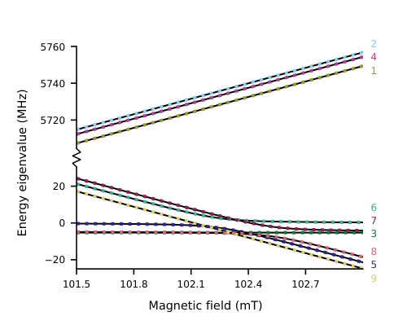
<figcaption class="paper-figure-caption"><b>Fig 5.</b> FIG. 5. Comparison between our derived analytic eigen- values (colored dots) and point wise numerical evaluations (black lines) for the 14N center at the GSLAC. Numbers on the right refer to the state labels of Eq. (C1). Errors (bottom) are the absolute difference of the two evaluations, shown on a log scale. Derived analytic curves and numerical evaluations were confirmed to be equal to float64 precision [23].</figcaption>
</figure>
</div>

<p><strong>Summary.</strong> This paper derives exact, closed-form Breit-Rabi formulae for the energy levels and eigenstates of the NV center in diamond for both $^{14}	ext{N}$ and $^{15}	ext{N}$. By providing these analytic solutions, the authors improve upon existing numerical and approximate methods, which is vital for high-precision quantum sensing and quantum computing applications.</p>
<p><strong>Why it may be interesting.</strong> This work provides fundamental, exact theoretical tools for understanding spin dynamics in solid-state quantum systems, which is crucial for designing robust quantum sensors and qubits based on NV centers.</p>
<details>
<summary>Detailed structure</summary>
<p><strong>Main problem.</strong> To derive exact, closed-form expressions for the energy eigenvalues and eigenstates of the Nitrogen-Vacancy (NV) center in diamond under an axial magnetic field.</p>
<p><strong>Main result.</strong> The authors provide analytic, closed-form solutions for the energy levels and eigenstates for both $^{14}	ext{N}$ and $^{15}	ext{N}$ isotopes, surpassing previous numerical or approximate methods.</p>
<p><strong>Method.</strong> The derivation involves solving the characteristic polynomial of the spin Hamiltonian, utilizing trigonometric and algebraic techniques to find exact roots and corresponding eigenstates.</p>
<p><strong>Model / system.</strong> The physical system is the NV center in diamond, modeled by a fine-structure spin Hamiltonian incorporating Zero-Field Splitting (D) and hyperfine coupling terms for both the electron spin ($S=1$) and the nitrogen nuclear spin ($I=1$ or $I=1/2$).</p>
<p><strong>Key observables.</strong> Energy eigenvalues ($\lambda_j$ or $E_n$) and the corresponding eigenstates ($\psi_j$ or $|\psi_n
angle$), particularly focusing on level anticrossings (GSLAC, ESLAC).</p>
<p><strong>Important parameters / regimes.</strong> Zero-Field Splitting ($D$), hyperfine coupling constants ($A_{\parallel}, A_{\perp}$), and the magnetic field components ($\gamma, \gamma_I, B_z$).</p>
<p><strong>Assumptions / limitations.</strong> The initial Hamiltonian is assumed to be solvable analytically, although approximations (like quadratic expansions) are used to analyze specific regimes such as anticrossings.</p>
<p><strong>Figures summary.</strong> Figures compare the derived analytic eigenvalues and eigenvectors against point-wise numerical evaluations for both $^{14}	ext{N}$ and $^{15}	ext{N}$ centers, demonstrating agreement across different magnetic field regimes.</p>
<p><strong>Paper structure.</strong> The paper systematically addresses the problem for both $^{15}	ext{N}$ and $^{14}	ext{N}$ isotopes, deriving the Hamiltonian matrix, solving the resulting characteristic equations using advanced mathematical techniques, and finally applying the results to predict key spectroscopic features like level anticrossings.</p>
</details>
<details>
<summary>Abstract</summary>
<p>The hyperfine structure that the nitrogen-vacancy (NV) center in diamond has with its nitrogen nucleus is of immense importance for quantum sensing and quantum computing. Current methods of calculating the NV hyperfine energy eigenvalues and eigenstates with respect to an axial magnetic field - i.e., calculating the NV Breit-Rabi formula - resort to numerical methods and analytic approximations. Here we provide an exact, closed-form expression to the NV hyperfine energy eigenvalues and eigenstates for both the nitrogen-14 and -15 cases.</p>
</details>
<p><sub><a href="#top">↑ back to top</a></sub></p>

<p><a id="paper-2609.14134"></a></p>
<h3 id="exact-solutions-of-hidden-free-fermion-models"><a href="http://arxiv.org/abs/2609.14134v1">Exact solutions of hidden free fermion models</a></h3>
<p><strong>Authors:</strong> Mingchen Zheng, Balázs Pozsgay, Shu Chen<br>
<strong>Type:</strong> theory · <strong>Category:</strong> strongly correlated electrons · <strong>PDF:</strong> <a href="https://arxiv.org/pdf/2609.14134v1">https://arxiv.org/pdf/2609.14134v1</a><br>
<strong>Analysis basis:</strong> full PDF text, analyzed in chunks
<strong>Topic relevance:</strong> <code>analog quantum simulation</code> <strong>2/5</strong></p>
<div class="figure-strip-hint">↔ Scroll figures horizontally</div>
<div class="paper-figures-scroll">
<figure class="paper-figure-card">
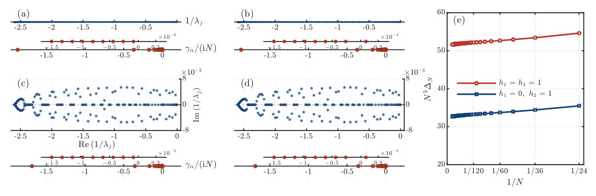
<figcaption class="paper-figure-caption"><b>Fig 1.</b> FIG. 1. Zero-root configurations at N = 600. Panels (a) and (b) show the ground state and first excited state of the one- wrap FFD chain, h1 = 0 and h2 = · · · = hN = 1. Panels (c) and (d) show the corresponding states of the periodic chain, h1 = · · · = hN = 1. Blue points show 1/λj, and red points show γα/(iN). The enlarged windows resolve the γ roots closest to the origin. The coefficient κ is 1, −1, 2, and −2 in panels (a)–(d), respectively. Panel (e) compares N 3∆N versus 1/N for the two closures at N = 24, 36, . . . , 600, where ∆N = E1(N) −E0(N).</figcaption>
</figure>
</div>

<p><strong>Summary.</strong> This work provides a comprehensive algebraic framework for understanding Hidden Free Fermion (HFF) models, unifying previously disparate integrable systems. By relating these models to the degeneration of a specific R matrix, the authors derive functional relations that determine the exact many-body spectrum. This advances the understanding of spectral organization and boundary effects in strongly correlated quantum chains.</p>
<p><strong>Why it may be interesting.</strong> The deep connection between algebraic integrability (R-matrices, Yang-Baxter equations) and the emergence of simple, solvable spectra (free fermions) in complex interacting models is highly relevant for understanding quantum many-body physics in condensed matter systems.</p>
<details>
<summary>Detailed structure</summary>
<p><strong>Main problem.</strong> The paper establishes a unified algebraic framework to understand Hidden Free Fermion (HFF) models, which exhibit free-fermion spectra without an explicit quadratic representation.</p>
<p><strong>Main result.</strong> A broad class of HFF models is shown to arise from Lax operator realizations of a twisted multistate Perk--Schultz R matrix, providing a common description for various spectral regimes.</p>
<p><strong>Method.</strong> The authors utilize the Yang–Baxter equation, fusion techniques, and the analysis of reflected degenerations of the R matrix to derive functional relations for commuting transfer matrices.</p>
<p><strong>Model / system.</strong> The primary model is the Hidden Free Fermion (HFF) Hamiltonian, exemplified by the inhomogeneous free-fermions-in-disguise (FFD) chain. The analysis extends to face-type and general integrable chains.</p>
<p><strong>Key observables.</strong> The many-body spectrum determined by the functional relations of the transfer matrices, and the existence of an emergent cubic finite-size gap coexisting with the exact z=3/2 bulk behavior.</p>
<p><strong>Important parameters / regimes.</strong> Coupling constants ($h_j$), boundary conditions (open vs. periodic), and the size $N$ of the system.</p>
<p><strong>Assumptions / limitations.</strong> The framework assumes the existence of an underlying integrable structure governed by the Perk–Schultz R matrix and its associated Lax operators.</p>
<p><strong>Figures summary.</strong> Figures illustrate zero-root configurations for the FFD chain under both open and periodic boundary conditions, and compare rescaled finite-size gaps ($\Delta N$) across different system sizes.</p>
<p><strong>Paper structure.</strong> The paper progresses by first establishing the general algebraic origin of HFF models via the R matrix, then applying this to the FFD chain to analyze spectral organization and boundary effects, and finally generalizing the framework to include face-type and other integrable chains.</p>
</details>
<details>
<summary>Abstract</summary>
<p>Hidden-free-fermion (HFF) Hamiltonians exhibit free-fermion spectra despite lacking an explicit quadratic representation, yet their algebraic provenance and periodic-boundary behavior remain open questions. Here we establish that a broad class of HFF models arises from distinct Lax operator realizations of a twisted multistate Perk--Schultz \(R\) matrix. Its reflected degeneration generates a closed finite hierarchy of mutually commuting transfer matrices, whose functional relations determine the complete many-body spectrum. As a decisive example, we solve the inhomogeneous free-fermions-in-disguise (FFD) chain, which exhibits HFF, nested HFF, or interacting spectra, depending on its coupling. The homogeneous FFD chain with both one-wrap and periodic boundary conditions exhibits an emergent cubic finite-size gap while retaining the exact \(z=3/2\) bulk behavior. The construction extends to higher-state and face-type realizations, providing a common algebraic framework for coupling-dependent spectral organization and multiscale behavior in interacting quantum systems.</p>
</details>
<p><sub><a href="#top">↑ back to top</a></sub></p>

<p><a id="paper-2609.13885"></a></p>
<h3 id="faithful-certification-of-steering-and-incompatibility-breaking-channels"><a href="http://arxiv.org/abs/2609.13885v1">Faithful certification of steering- and incompatibility-breaking channels</a></h3>
<p><strong>Authors:</strong> Po-Ting Hsu, Shin-Liang Chen<br>
<strong>Type:</strong> theory · <strong>Category:</strong> quantum information and computing · <strong>PDF:</strong> <a href="https://arxiv.org/pdf/2609.13885v1">https://arxiv.org/pdf/2609.13885v1</a><br>
<strong>Analysis basis:</strong> full PDF text, analyzed in chunks
<strong>Topic relevance:</strong> <code>quantum measurements</code> <strong>2/5</strong></p>
<div class="figure-strip-hint">↔ Scroll figures horizontally</div>
<div class="paper-figures-scroll">
<figure class="paper-figure-card">
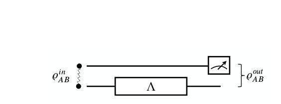
<figcaption class="paper-figure-caption"><b>Fig 1.</b> FIG. 1. In this work, we present an approach to verify whether a quantum channel Λ is steering- and incompatibility- breaking for all input state ϱin AB.</figcaption>
</figure>
<figure class="paper-figure-card">
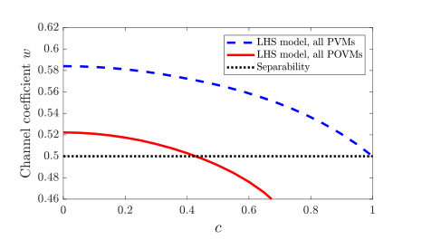
<figcaption class="paper-figure-caption"><b>Fig 2.</b> FIG. 2. The solution of Eq. (10) for various values of c, which parametrizes the family of channels described by Eq. (12). The black-dotted line is where the channel becomes entan- glement breaking. Below the blue-dashed curve, the channel breaks steerability and incompatibility for all projective mea- surements. Below the red-solid curve, the channel breaks the two for all POVMs. Between either curve and the dotted line the entanglement survives. The two curves come from different measurement sets. For the result of projective mea- surements, we use the twelve measurements along the ver- tices of a rhombicuboctahedron [19]. For POVM, we use the six measurements along the vertices of an...</figcaption>
</figure>
</div>

<p><strong>Summary.</strong> This paper presents a theoretical framework to detect if a quantum channel destroys quantum correlations like steerability or measurement incompatibility. It achieves this by reformulating the problem as a Semidefinite Program (SDP) and deriving a corresponding, experimentally testable steering inequality. This method provides a powerful tool for characterizing the robustness of quantum resources against noise.</p>
<p><strong>Why it may be interesting.</strong> This work provides a powerful, general mathematical framework (SDP/inequalities) to quantify fundamental resource limitations (like steering) in noisy quantum channels, which is crucial for quantum communication protocols.</p>
<details>
<summary>Detailed structure</summary>
<p><strong>Main problem.</strong> The paper aims to develop a rigorous method to certify whether a quantum channel is 'steering-breaking' or 'incompatibility-breaking' for any input state.</p>
<p><strong>Main result.</strong> They show that the certification can be achieved by formulating the problem as a Semidefinite Program (SDP) and deriving an experimentally testable 'steering inequality' from its dual form.</p>
<p><strong>Method.</strong> The core method involves adapting techniques from previous works to check if the output state admits a Local-Hidden-State (LHS) model, which is formulated as an SDP.</p>
<p><strong>Model / system.</strong> The study focuses on quantum steering, where Alice sends a subsystem through a quantum channel ($\Lambda$) to Bob, and the goal is to detect if the channel destroys the ability to demonstrate entanglement.</p>
<p><strong>Key observables.</strong> Steerability, measurement incompatibility, and the feasibility of the Local-Hidden-State (LHS) model for the conditional states.</p>
<p><strong>Important parameters / regimes.</strong> The channel parameter $w$ (for depolarizing channels) and the radius $r$ used in the SDP formulation.</p>
<p><strong>Assumptions / limitations.</strong> The SDP approach provides a sufficient certification, though it becomes necessary and sufficient in certain limits (e.g., all projective measurements).</p>
<p><strong>Figures summary.</strong> Figure 1 illustrates the general approach to verifying channel breaking properties; Figure 2 compares boundaries for entanglement, steerability, and incompatibility breaking for different measurement types.</p>
<p><strong>Paper structure.</strong> The paper builds from defining the problem (certifying channel breaking) to applying SDP techniques, deriving the dual steering inequality, and finally applying this framework to specific models like the depolarizing channel to derive concrete bounds.</p>
</details>
<details>
<summary>Abstract</summary>
<p>We consider a quantum steering scenario where Alice prepares a bipartite state, sends one subsystem to Bob through a quantum channel, and aims to convince him that their shared state is entangled. Bob, however, will never be convinced if the channel is steering-breaking, that is, if the channel destroys steerability for any input state. To verify that a channel renders a state useless for demonstrating steering, one must consider all possible measurements performed by Alice and check if the conditional states Bob receives admit a local-hidden-state (LHS) model. This is generally a hard problem since it requires considering an infinite number of measurement combinations. Here, we show that the method proposed in [Phys. Rev. Lett. 117, 190401 (2016); Phys. Rev. Lett. 117, 190402 (2016)] can be utilized to tackle this problem. Furthermore, owing to the intimate relation between steering and measurement incompatibility, our approach can faithfully certify whether a channel destroys incompatibility for any set of measurements. Finally, we propose an experimental criterion for certifying steering- and incompatibility-breaking channels, which may be of independent interest.</p>
</details>
<p><sub><a href="#top">↑ back to top</a></sub></p>

<p><a id="paper-2609.14668"></a></p>
<h3 id="finite-temperature-quantum-monte-carlo-study-of-dirac-quantum-criticality-algorithmic-advances-and-comprehensive-analysis"><a href="http://arxiv.org/abs/2609.14668v1">Finite-temperature quantum Monte Carlo study of Dirac quantum criticality: Algorithmic advances and comprehensive analysis</a></h3>
<p><strong>Authors:</strong> Hou-Min Du, Qian Sun, Yuan-Yao He<br>
<strong>Type:</strong> theory · <strong>Category:</strong> strongly correlated electrons · <strong>PDF:</strong> <a href="https://arxiv.org/pdf/2609.14668v1">https://arxiv.org/pdf/2609.14668v1</a><br>
<strong>Analysis basis:</strong> full PDF text, analyzed in chunks
<strong>Topic relevance:</strong> <code>analog quantum simulation</code> <strong>2/5</strong></p>
<div class="figure-strip-hint">↔ Scroll figures horizontally</div>
<div class="paper-figures-scroll">
<figure class="paper-figure-card">
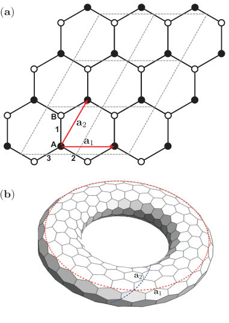
<figcaption class="paper-figure-caption"><b>Fig 1.</b> FIG. 1. (a) Illustration of the honeycomb lattice with primi- tive lattice vectors a1 = ( √</figcaption>
</figure>
<figure class="paper-figure-card">
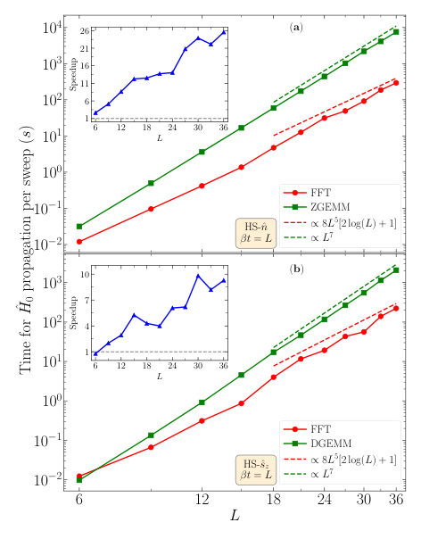
<figcaption class="paper-figure-caption"><b>Fig 2.</b> FIG. 2. Comparison of the average time for propagating the noninteracting part per sweep (in seconds) between the FFT and ZGEMM/DGEMM methods in AFQMC simulations of the honeycomb Hubbard model with U/t = 1 and βt = L. Panels (a) and (b) show the results applying HS-ˆn [Eq. (6)] and HS-ˆsz [Eq. (5)], respectively. The dashed lines plot the corresponding theoretical scalings. The insets in both panels illustrate the corresponding speedups achieved by the FFT compared to ZGEMM/DGEMM for the propagation.</figcaption>
</figure>
<figure class="paper-figure-card">
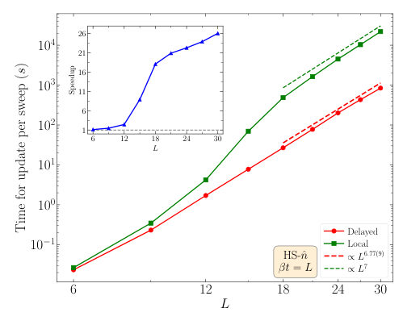
<figcaption class="paper-figure-caption"><b>Fig 3.</b> FIG. 3. Comparison of the average time for update per sweep (in seconds) between the local and delayed updates, as a function of L in AFQMC simulations of the model (1) with U/t = 3.70 and βt = L. The HS-ˆn transformation [Eq. (6)] is applied. The green dashed line plots the theoretical compu- tational complexity (∝L7), while the red dashed line shows algebraic fit (∝Lα) to the consumed time of delayed update, yielding fitted exponents α slightly below 7. The inset illus- trates the speedup achieved by the delayed update compared to the local update.</figcaption>
</figure>
<figure class="paper-figure-card">
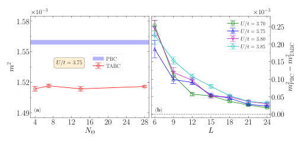
<figcaption class="paper-figure-caption"><b>Fig 4.</b> FIG. 4. (a) The convergence of mean-squared magnetization m2 computed from AFQMC simulations with TABC using the number of twist angles NΘ = 4, 7, 14, 28. The horizontal blue shaded band indicates the PBC result of m2 for reference. The simulation parameters are βt = L = 18, and U/t = 3.75. (b) The difference (m2 PBC−m2 TABC), plotted as a function of L ranging from L = 6 to L = 24, for U/t = 3.70, 3.75, 3.80, 3.85.</figcaption>
</figure>
<figure class="paper-figure-card">
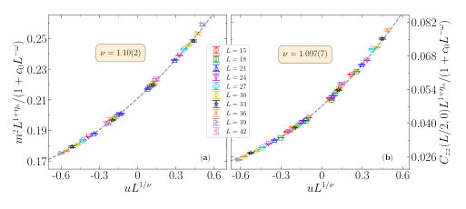
<figcaption class="paper-figure-caption"><b>Fig 5.</b> FIG. 6. The data collapse for (a) m2L1+ηϕ/(1 + c0L−ω), and (b) Czz(L/2, 0)L1+ηϕ/(1 + c0L−ω), versus uL1/ν according to Eq. (43), with fixed Uc and ηϕ from Fig. 5. The fitting process uses the AFQMC data of m2 and Czz(L/2, 0) within L = 15 ∼42 presented in Fig. 5. Consistent results of the critical exponent ν = 1.10(2) and ν = 1.097(7) are obtained from m2 and Czz(L/2, 0), respectively. Gray dashed lines plot the function fs(uL1/ν), which is approximated by a second- order polynomial in uL1/ν during the fitting.</figcaption>
</figure>
</div>

<p><strong>Summary.</strong> This paper performs a detailed study of the quantum phase transition in the honeycomb Hubbard model using advanced finite-temperature Quantum Monte Carlo simulations. The authors report locating the critical point and determining critical exponents for the transition between a Dirac semimetal and an antiferromagnetic Mott insulator. The work advances computational methodology while establishing a key benchmark for chiral Heisenberg criticality in this strongly correlated system.</p>
<p><strong>Why it may be interesting.</strong> While focused on lattice models, the use of advanced QMC techniques and the determination of critical exponents provide rigorous benchmarks for understanding interacting quantum matter, which informs broader theories of many-body dynamics.</p>
<details>
<summary>Detailed structure</summary>
<p><strong>Main problem.</strong> The study investigates the quantum phase transition from a Dirac semimetal (DSM) to an antiferromagnetic Mott insulator (AFMI) in the honeycomb-lattice Hubbard model.</p>
<p><strong>Main result.</strong> The critical point was located at U_c/t = 3.731(4), yielding critical exponents such as $\nu = 1.097(7)$ and $\eta_\phi = 0.72(2)$.</p>
<p><strong>Method.</strong> The research employs finite-temperature auxiliary-field quantum Monte Carlo (AFQMC) simulations, incorporating algorithmic advances like generalized FFT and delayed updates.</p>
<p><strong>Model / system.</strong> The system is the honeycomb-lattice Hubbard model, which is analyzed at half filling and is known to preserve particle-hole symmetry, thus avoiding the fermion sign problem.</p>
<p><strong>Key observables.</strong> Spin correlations, off-diagonal single-particle Green's function, quasiparticle weight, Fermi-liquid parameter, and fidelity susceptibility.</p>
<p><strong>Important parameters / regimes.</strong> The critical point ratio $U_c/t$, and the scaling relation $\beta t = L$ used to approach the zero-temperature limit.</p>
<p><strong>Assumptions / limitations.</strong> The simulation assumes the dynamical critical exponent $z=1$ and utilizes twist-averaged boundary conditions to minimize finite-size effects.</p>
<p><strong>Figures summary.</strong> Figure 1 illustrates the honeycomb lattice structure and its wrapping onto a torus for periodic boundary conditions.</p>
<p><strong>Paper structure.</strong> The paper systematically applies advanced AFQMC techniques to analyze the phase transition, performing finite-size scaling analyses on key observables to pinpoint the critical point and determine universal exponents.</p>
</details>
<details>
<summary>Abstract</summary>
<p>We present a systematic study of the quantum phase transition from a Dirac semimetal to an antiferromagnetic Mott insulator in the honeycomb-lattice Hubbard model, using finite-temperature auxiliary-field quantum Monte Carlo (AFQMC) simulations. Given the dynamical critical exponent $z=1$ at criticality, we scale the inverse temperature $β$ with the linear system size $L$, i.e., $βt=L$ (with $t$ as the hopping amplitude), to approach the thermodynamic and zero-temperature limits simultaneously. On the algorithmic front, we generalize the fast Fourier transform in path propagation to multi-sublattice systems and employ the delayed update technique in configuration updates to accelerate the AFQMC simulations. These advances enable us to access unprecedented system sizes of up to $3528$ sites (with $L=42$ and $βt = 42$). We additionally use twist-averaged boundary conditions to reduce the finite-size effects in computed observables. On the physical side, we determine the Dirac quantum criticality via finite-size scaling analysis of the spin correlations and off-diagonal single-particle Green's function, and locate the critical point at $U_c/t=3.731(4)$ with the critical exponents $ν=1.097(7)$, $η_φ=0.72(2)$ and $η_ψ=0.155(6)$. We further corroborate the critical point by examining several relevant quantities, including the quasiparticle weight, Fermi-liquid parameter, charge compressibility, $U$-derivative of double occupancy, and fidelity susceptibility. Our work establishes an independent benchmark for the chiral Heisenberg Gross-Neveu-Yukawa criticality in the honeycomb Hubbard model, offering a complementary perspective to previous ground-state simulations.</p>
</details>
<p><sub><a href="#top">↑ back to top</a></sub></p>

<p><a id="paper-2609.14436"></a></p>
<h3 id="from-breakfast-lunch-and-dinner-to-the-bell-inequality-tetrahedron"><a href="http://arxiv.org/abs/2609.14436v1">From breakfast, lunch, and dinner to the Bell-inequality tetrahedron</a></h3>
<p><strong>Authors:</strong> Francesco Giacosa<br>
<strong>Type:</strong> theory · <strong>Category:</strong> other · <strong>PDF:</strong> <a href="https://arxiv.org/pdf/2609.14436v1">https://arxiv.org/pdf/2609.14436v1</a><br>
<strong>Analysis basis:</strong> full PDF text, analyzed in chunks
<strong>Topic relevance:</strong> <code>quantum measurements</code> <strong>2/5</strong></p>
<div class="figure-strip-hint">↔ Scroll figures horizontally</div>
<div class="paper-figures-scroll">
<figure class="paper-figure-card">
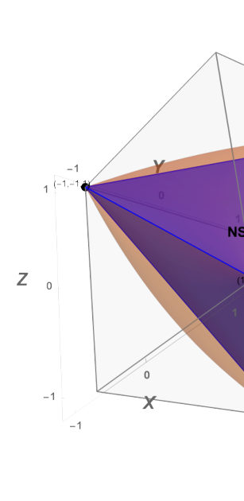
<figcaption class="paper-figure-caption"><b>Fig 1.</b> Fig. 1: Geometric representation of the symmetric Bell scenario in the (X, Y, Z) correlation space. The symmetric local region L is the tetrahedron with vertices (1, 1, 1), (1, −1, −1), (−1, 1, −1), and (−1, −1, 1). The symmetric quantum region Q is the elliptope defined by 1 + 2XY Z −X2 −Y 2 −Z2 ≥0, which contains the local tetrahedron. Both regions are contained in the no-signalling region NS, represented by the cube [−1, 1]3. The viewing angle has been chosen to appreciate the quantum elliptope covering the local region.</figcaption>
</figure>
<figure class="paper-figure-card">
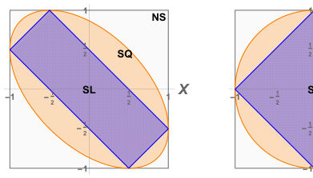
<figcaption class="paper-figure-caption"><b>Fig 2.</b> Fig. 2: Sections of the geometric regions of Fig. 1 in the (X, Y ) plane for fixed values Z = −1/2, Z = 0, and Z = +1/2 (from left to right). The blue region is the symmetric local region L, the orange region together with the blue region forms the symmetric quantum region Q, and the full square corresponds to the no-signalling region NS. For Z = 0, the quantum boundary reduces to the unit circle X2 + Y 2 = 1. For Z = ±1/2, the quantum sections are tilted ellipses.</figcaption>
</figure>
<figure class="paper-figure-card">
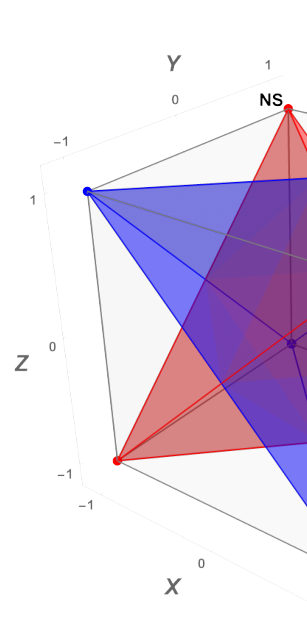
<figcaption class="paper-figure-caption"><b>Fig 3.</b> Fig. 3: The local tetrahedron corresponding to twins (blue) and anti-twins (red) in the (X, Y, Z) correlation space. The anti-twin tetrahedron is obtained from the twin tetrahe- dron by the inversion (X, Y, Z) →(−X, −Y, −Z). The two tetrahedra are therefore related by reflection through the origin and together occupy complementary sets of four vertices of the no-signalling cube NS = [−1, 1]3.</figcaption>
</figure>
</div>

<p><strong>Summary.</strong> This paper offers a pedagogical deep dive into Bell inequalities by analyzing correlations in a simplified 'twin' quantum state. It maps the constraints imposed by local realism, quantum mechanics, and non-signaling principles into a geometric space defined by three correlation moments. The key takeaway is the clear containment hierarchy: local models are restricted to a tetrahedron within the quantum elliptope, which is itself contained within the no-signaling cube.</p>
<p><strong>Why it may be interesting.</strong> The geometric comparison of correlation regions (L $\subset$ Q $\subset$ NS) is a fundamental tool in quantum foundations, providing intuitive visualization for how quantum correlations violate classical bounds.</p>
<details>
<summary>Detailed structure</summary>
<p><strong>Main problem.</strong> The paper provides a pedagogical visualization and mathematical analysis of Bell inequalities using a simplified 'twin' quantum state setup.</p>
<p><strong>Main result.</strong> It establishes a clear geometric hierarchy in the correlation space: the local model region (tetrahedron) is contained within the quantum region (elliptope), which is itself contained within the no-signalling region (cube).</p>
<p><strong>Method.</strong> The analysis uses mixed moments (correlators) derived from the quantum state and compares the resulting bounds against those imposed by local hidden variable theories.</p>
<p><strong>Model / system.</strong> The model involves two entangled particles (or 'twins') measured at distant locations, characterized by three correlation observables (X, Y, Z) corresponding to three pairs of measurements (e.g., breakfast/lunch, lunch/dinner).</p>
<p><strong>Key observables.</strong> Mixed moments $(X, Y, Z)$, which are the expectation values of products of measurement outcomes.</p>
<p><strong>Important parameters / regimes.</strong> The correlation space is analyzed in terms of the coordinates $(X, Y, Z)$, with bounds defined by the local tetrahedron, the quantum elliptope, and the no-signalling cube.</p>
<p><strong>Assumptions / limitations.</strong> The analysis simplifies the quantum correlations by assuming a 'deterministic twins' setup, which is a pedagogical simplification of the full stochastic model.</p>
<p><strong>Figures summary.</strong> Figure 1 illustrates the geometric containment: the local model space (tetrahedron) is inside the quantum space (elliptope), which is inside the no-signalling region (cube) in the $(X, Y, Z)$ space.</p>
<p><strong>Paper structure.</strong> The paper introduces the concept via the 'twin' analogy, derives the mixed moments using quantum expectation values, and then rigorously compares the bounds imposed by local realism, quantum mechanics, and non-signaling constraints.</p>
</details>
<details>
<summary>Abstract</summary>
<p>A simple pedagogical discussion and visualization of certain Bell inequalities is presented with the help of a system involving two \textquotedblleft twins\textquotedblright, originally discussed in 2605.03104. These twins answer identically when the same <code>question' is posed, here exemplified with: Did you like breakfast/lunch/dinner? In analogy, for two entangled particles at distant locations, the</code>twin-like' quantum state is such that the same outcome for the same measurement (i.e. spin direction) is obtained. In the space $(X,Y,Z)$ of mixed moments (i.e. $X$ refers to breakfast-lunch correlation, being $1$ for same answers and $-1$ for opposite ones), the space of Bell local models is contained in a tetrahedron, while the quantum space is bound by an elliptope that embeds the tetrahedron. The whole no-signalling region in the $(X,Y,Z)$ space is the cube $[-1,1]^{3}.$ The twin scenario applies e.g. to the decay of the Higgs into fermions.</p>
</details>
<p><sub><a href="#top">↑ back to top</a></sub></p>

<p><a id="paper-2609.13870"></a></p>
<h3 id="hiai-petz-skew-informations-and-sharp-uncertainty-relations-for-a-single-observable"><a href="http://arxiv.org/abs/2609.13870v1">Hiai--Petz Skew Informations and Sharp Uncertainty Relations for a Single Observable</a></h3>
<p><strong>Authors:</strong> Gen Kimura<br>
<strong>Type:</strong> theory · <strong>Category:</strong> quantum information and computing · <strong>PDF:</strong> <a href="https://arxiv.org/pdf/2609.13870v1">https://arxiv.org/pdf/2609.13870v1</a><br>
<strong>Analysis basis:</strong> full PDF text, analyzed in chunks
<strong>Topic relevance:</strong> <code>quantum measurements</code> <strong>2/5</strong></p>
<div class="figure-strip-hint">↔ Scroll figures horizontally</div>
<div class="paper-figures-scroll">
<figure class="paper-figure-card">
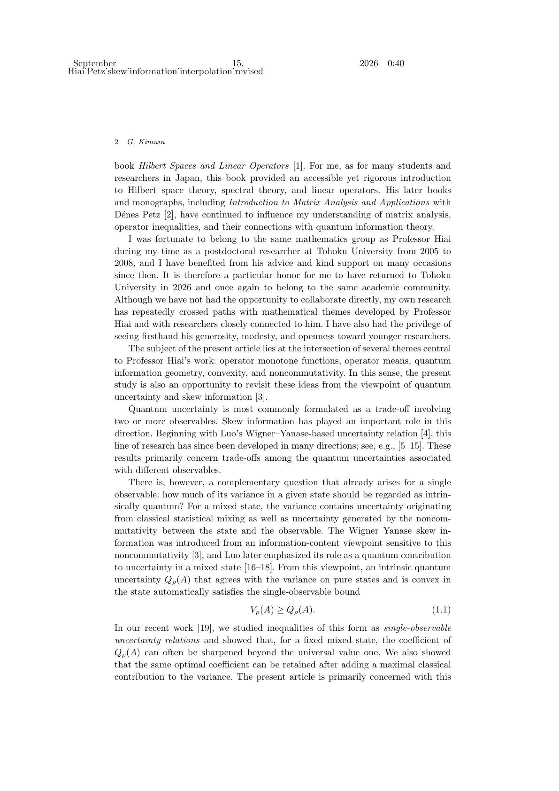
<figcaption class="paper-figure-caption"><b>Fig 1.</b> Low-resolution page preview, page 2</figcaption>
</figure>
<figure class="paper-figure-card">
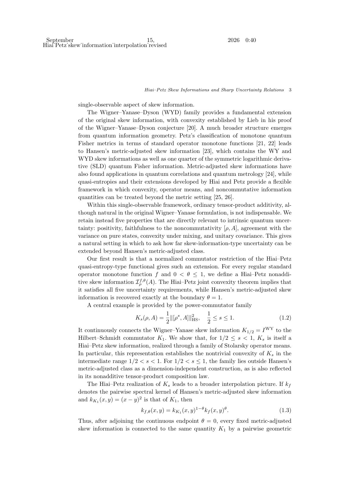
<figcaption class="paper-figure-caption"><b>Fig 2.</b> Low-resolution page preview, page 3</figcaption>
</figure>
<figure class="paper-figure-card">
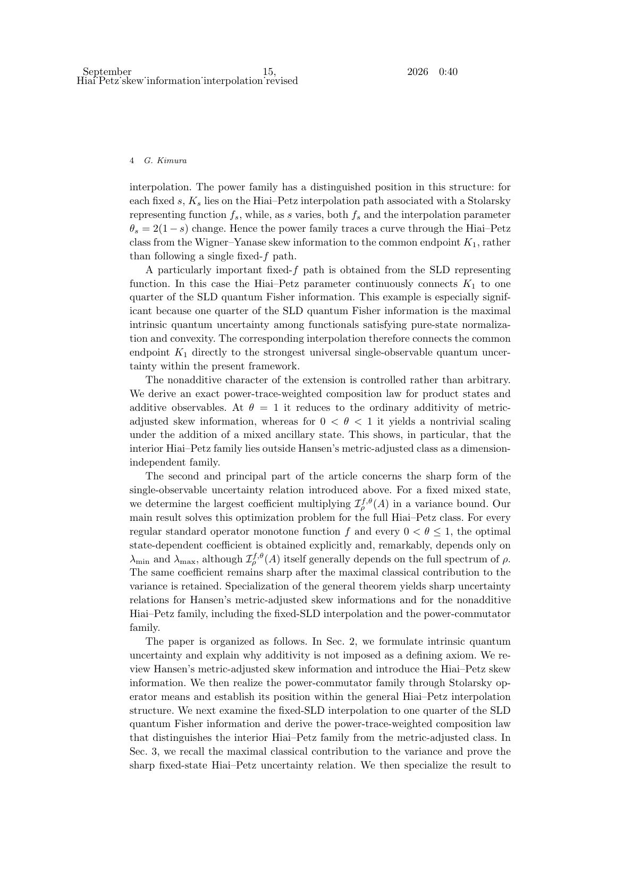
<figcaption class="paper-figure-caption"><b>Fig 3.</b> Low-resolution page preview, page 4</figcaption>
</figure>
<figure class="paper-figure-card">
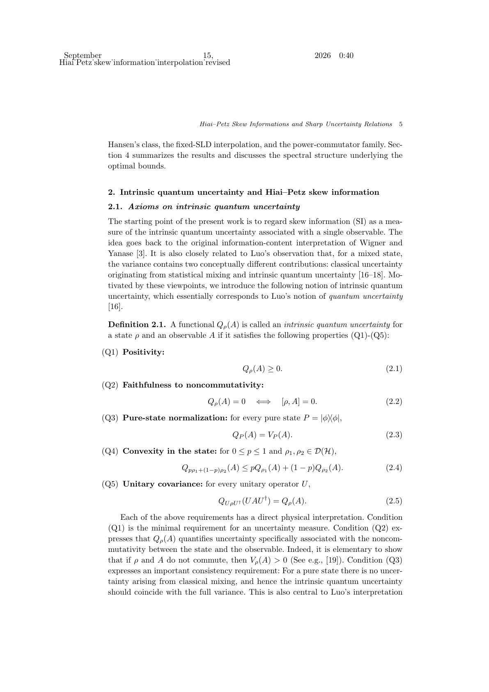
<figcaption class="paper-figure-caption"><b>Fig 4.</b> Low-resolution page preview, page 5</figcaption>
</figure>
<figure class="paper-figure-card">
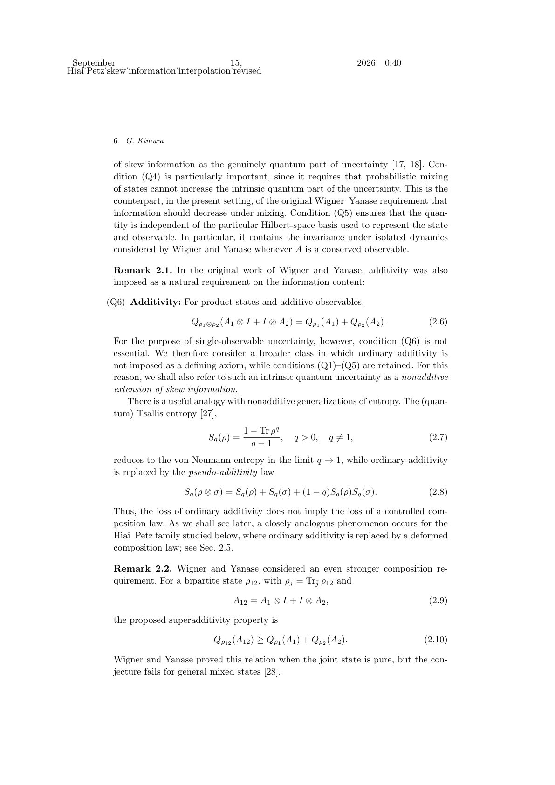
<figcaption class="paper-figure-caption"><b>Fig 5.</b> Low-resolution page preview, page 6</figcaption>
</figure>
</div>

<p><strong>Summary.</strong> This paper develops the Hiai--Petz skew information, a generalized measure of quantum uncertainty for a single observable. By creating an interpolation family that relaxes standard additivity, the authors derive a sharp, universal uncertainty relation. This framework unifies several existing quantum information measures, providing deeper structural insights into quantum measurement theory.</p>
<p><strong>Why it may be interesting.</strong> This work provides a powerful, unified mathematical framework for understanding how various quantum uncertainty measures relate to each other, which is crucial for developing robust quantum metrology tools.</p>
<details>
<summary>Detailed structure</summary>
<p><strong>Main problem.</strong> The paper investigates the intrinsic quantum uncertainty associated with a single observable by developing and analyzing a generalized class of skew information measures.</p>
<p><strong>Main result.</strong> A sharp, state-dependent uncertainty relation is derived for the full Hiai--Petz class, showing the optimal coefficient depends only on the state's extremal eigenvalues.</p>
<p><strong>Method.</strong> The authors introduce Hiai--Petz nonadditive skew informations by relaxing the additivity axiom, creating an interpolation family between metric-adjusted skew information and other known bounds.</p>
<p><strong>Model / system.</strong> The analysis is performed on general quantum states ($
ho$) and a single observable ($A$) in a Hilbert space, focusing on the mathematical structure of quantum uncertainty measures.</p>
<p><strong>Key observables.</strong> Skew information ($I_{f, 	heta}^{
ho}(A)$), Variance ($   ext{Var}<em SLD>
ho(A)$), SLD quantum Fisher information ($F</em>^Q$), and the power-commutator family ($K_s(
ho, A)$).</p>
<p><strong>Important parameters / regimes.</strong> The interpolation parameter $   heta$ ($0 < 	heta \leq 1$), and the state's largest ($\lambda_{\max}$) and smallest ($\lambda_{\min}$) eigenvalues.</p>
<p><strong>Assumptions / limitations.</strong> The framework retains five key properties of intrinsic quantum uncertainty (positivity, faithfulness to $[
ho, A]$, etc.) while relaxing the standard additivity axiom.</p>
<p><strong>Paper structure.</strong> The paper builds from defining the problem using intrinsic uncertainty axioms, introduces the Hiai--Petz interpolation structure, derives the sharp uncertainty relation, and then shows how specific known measures (like the power-commutator family) fit into this general framework.</p>
</details>
<details>
<summary>Abstract</summary>
<p>We study intrinsic quantum uncertainty associated with a single observable from the viewpoint of skew information. By relaxing ordinary additivity while retaining the other fundamental uncertainty requirements, we introduce a class of Hiai--Petz nonadditive skew informations that contains Hansen's metric-adjusted skew informations as the boundary case $θ=1$. Our main quantitative result is a sharp single-observable uncertainty relation for the full Hiai--Petz class. For a fixed state, the optimal coefficient depends only on its largest and smallest eigenvalues and remains sharp even after the maximal classical contribution to the variance is retained. The general theorem yields, as special cases, sharp bounds for metric-adjusted skew informations, the SLD quantum Fisher information, and the power-commutator family. We further show that $K_s(ρ,A)=\frac12\|[ρ^s,A]\|_{\mathrm{HS}}^2$, $1/2\le s<1$, is realized within the Hiai--Petz framework through Stolarsky operator means, thereby establishing its convexity for $1/2<s<1$. More generally, for each fixed operator monotone function $f$, the Hiai--Petz spectral kernel interpolates geometrically between the metric-adjusted skew information $I^f$ and the common endpoint $K_1$. The resulting family obeys an exact power-trace-weighted composition law, replacing ordinary additivity in the interior $0<θ<1$.</p>
</details>
<p><sub><a href="#top">↑ back to top</a></sub></p>

<p><a id="paper-2609.13656"></a></p>
<h3 id="probing-the-anomalous-symmetry-breaking-in-kagome-material-csv3sb5-via-third-order-nonlinearity"><a href="http://arxiv.org/abs/2609.13656v1">Probing the anomalous symmetry-breaking in kagome material CsV3Sb5 via third-order nonlinearity</a></h3>
<p><strong>Authors:</strong> Zheng Dai, Fengyi Guo, Shuai Zhang, Xiubing Li, Congcong Li, Yufan Ju, Ziqi Wang, Bin Cheng, Zhe Ying, Fengqi Song<br>
<strong>Type:</strong> experiment · <strong>Category:</strong> strongly correlated electrons · <strong>PDF:</strong> <a href="https://arxiv.org/pdf/2609.13656v1">https://arxiv.org/pdf/2609.13656v1</a><br>
<strong>Analysis basis:</strong> full PDF text, analyzed in chunks
<strong>Topic relevance:</strong> <code>quantum measurements</code> <strong>2/5</strong></p>
<div class="figure-strip-hint">↔ Scroll figures horizontally</div>
<div class="paper-figures-scroll">
<figure class="paper-figure-card">
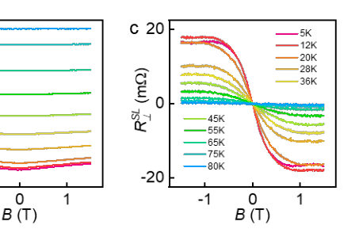
<figcaption class="paper-figure-caption"><b>Fig 1.</b> FIG. 1. Basic characterization of the CsV3Sb5 sample. (a) The temperature-dependent</figcaption>
</figure>
<figure class="paper-figure-card">
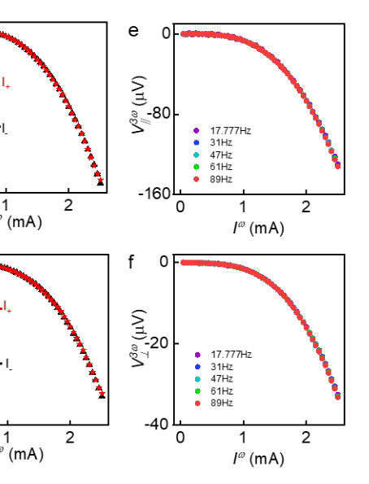
<figcaption class="paper-figure-caption"><b>Fig 2.</b> FIG. 2. The third-order nonlinear transport of CsV3Sb5 at 5 K. (a) The first-order</figcaption>
</figure>
<figure class="paper-figure-card">
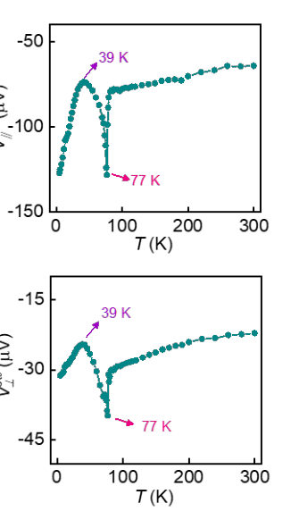
<figcaption class="paper-figure-caption"><b>Fig 3.</b> FIG. 3. The temperature-dependent third-order nonlinearity of CsV3Sb5. (a)-(b) The</figcaption>
</figure>
<figure class="paper-figure-card">
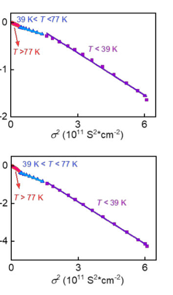
<figcaption class="paper-figure-caption"><b>Fig 4.</b> FIG. 4. The scaling law of the third-order nonlinearity in CsV3Sb5. (a) The temperature-</figcaption>
</figure>
</div>

<p><strong>Summary.</strong> This experimental work investigates the anomalous symmetry-breaking in the kagome material CsV3Sb5 by measuring its third-order nonlinear electrical response. The measurements reveal distinct signatures at the CDW transition and a lower temperature associated with symmetry breaking. By analyzing the scaling of these nonlinear signals, the authors successfully separate the intrinsic quantum geometric contributions from extrinsic scattering effects.</p>
<p><strong>Why it may be interesting.</strong> The use of nonlinear transport as a highly sensitive probe for subtle symmetry-breaking transitions in correlated materials provides a powerful experimental diagnostic tool relevant to understanding emergent quantum phases.</p>
<details>
<summary>Detailed structure</summary>
<p><strong>Main problem.</strong> The study aims to probe the anomalous symmetry-breaking mechanisms occurring in the kagome material CsV3Sb5.</p>
<p><strong>Main result.</strong> The third-order nonlinear transport measurements reveal distinct enhancements at the CDW transition (77 K) and the anomalous symmetry-breaking temperature (39 K).</p>
<p><strong>Method.</strong> The researchers measured the third-order nonlinear longitudinal and Hall electrical responses as a function of temperature and current.</p>
<p><strong>Model / system.</strong> The physical system is the kagome material CsV3Sb5, which exhibits complex correlated electronic states, including charge-density wave (CDW) order and anomalous symmetry-breaking transitions.</p>
<p><strong>Key observables.</strong> Third-order nonlinear longitudinal and Hall voltages ($V^{(3)}_{\omega}, V^{(3)}_{\omega\perp}$), and the temperature dependence of these responses.</p>
<p><strong>Important parameters / regimes.</strong> Transition temperatures ($T_{CDW} \approx 77 	ext{ K}$, $T^* \approx 39 	ext{ K}$), magnetic field strength, and current magnitude.</p>
<p><strong>Assumptions / limitations.</strong> The analysis assumes that the third-order nonlinearity is dominated by intrinsic quantum geometric contributions and extrinsic scattering mechanisms, allowing for a scaling analysis to separate these effects.</p>
<p><strong>Figures summary.</strong> Figures show temperature dependence of third-order nonlinear signals exhibiting kinks at 77 K and 39 K; other figures detail basic transport characterization and scaling analysis plots.</p>
<p><strong>Paper structure.</strong> The paper proceeds by characterizing the basic transport properties, measuring the third-order nonlinear response across temperatures, analyzing the temperature dependence to identify phase transitions, and finally applying scaling analysis to decouple intrinsic quantum geometric effects from extrinsic scattering.</p>
</details>
<details>
<summary>Abstract</summary>
<p>The kagome material has rapidly established itself as a research frontier in condensed matter physics, owing to its distinctive geometric structure and the rich array of unconventional physical phenomena. In the kagome AV3Sb5 (A = K, Rb, Cs) family, the charge-ordered state exhibits a remarkable characteristic, i.e., anomalous symmetry-breaking, which is tied to the topological nature of the electronic band structure. Here, we report the third-order nonlinear longitudinal and Hall responses that persist stably up to room temperature in the kagome material CsV3Sb5. Notably, the nonlinear responses demonstrate significant enhancement below the charge density wave (~ 77 K) order and anomalous symmetry-breaking (~ 39 K) state. The scaling analysis indicates that the third-order nonlinear transport is governed jointly by quantum geometric contribution and extrinsic scattering. This study realizes a giant third-order nonlinear response and provides a distinct method to detect anomalous symmetry-breaking in CsV3Sb5.</p>
</details>
<p><sub><a href="#top">↑ back to top</a></sub></p>

<p><a id="paper-2609.14305"></a></p>
<h3 id="pseudo-entropy-from-entanglement-entropy"><a href="http://arxiv.org/abs/2609.14305v1">Pseudo entropy from entanglement entropy</a></h3>
<p><strong>Authors:</strong> Abhigyan Saha, Piotr Sułkowski, Tadashi Takayanagi<br>
<strong>Type:</strong> theory · <strong>Category:</strong> statistical mechanics · <strong>PDF:</strong> <a href="https://arxiv.org/pdf/2609.14305v1">https://arxiv.org/pdf/2609.14305v1</a><br>
<strong>Analysis basis:</strong> full PDF text, analyzed in chunks
<strong>Topic relevance:</strong> <code>Keldysh / 2PI / non-Gaussian methods</code> <strong>2/5</strong></p>
<div class="figure-strip-hint">↔ Scroll figures horizontally</div>
<div class="paper-figures-scroll">
<figure class="paper-figure-card">
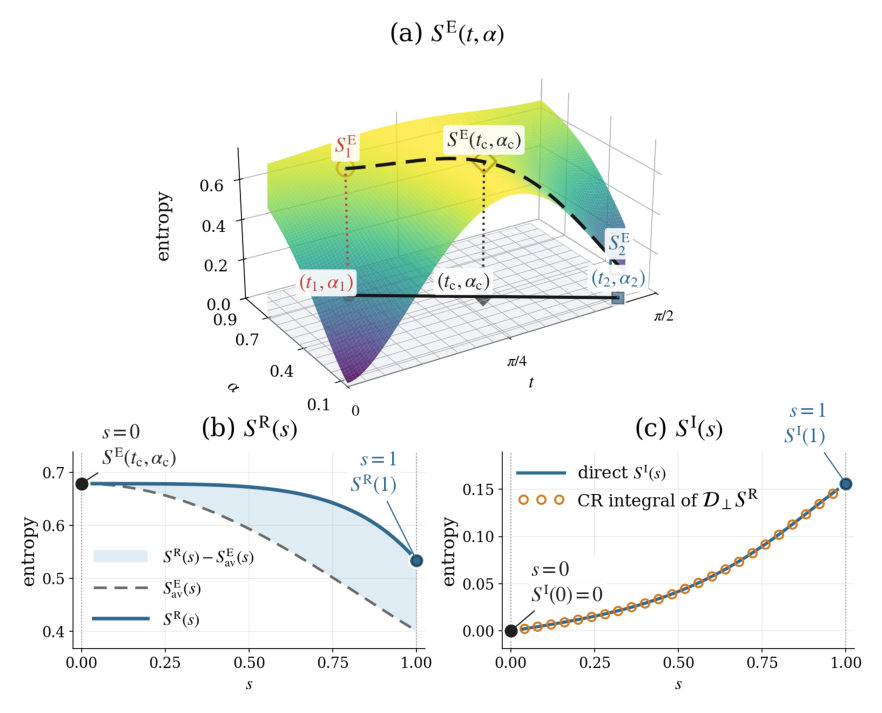
<figcaption class="paper-figure-caption"><b>Fig 1.</b> Figure 1. Two-qubit example. (a) The entanglement entropy for Eqn. (3.21). The solid line is the segment joining the two chosen points in the (t, α) plane, and the dashed curve is the corresponding entropy along that segment. The grey plane only shows the (t, α) coordinates and does not represent zero entropy. (b) The real part SR(s), the average SE av(s), and the excess pseudo entropy SR(s) −SE av(s). (c) The imaginary part computed from the eigenvalues of the reduced transition matrix, compared with the result of integrating the Cauchy-Riemann equation in Eqn. (3.26). In (b) and (c), s = 0 gives the same state at the midpoint, while s = 1 gives the two chosen states in Eqn. (3.23).</figcaption>
</figure>
<figure class="paper-figure-card">
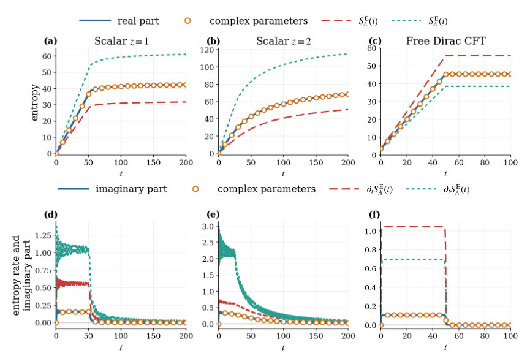
<figcaption class="paper-figure-caption"><b>Fig 2.</b> Figure 2. This figure reproduces the qualitative time dependence in Figure 21 of [35]. The three columns show the scalar models with z = 1, 2 and the free Dirac CFT. The upper row shows the real part of pseudo entropy and the two entanglement entropies, and the lower row shows the imaginary part of pseudo entropy and the time derivatives of the two entanglement entropies. Hollow markers show the values for the scalar lattice obtained by evaluating the ordinary covariance of each mode at t −iθn, as in Eqn. (5.42), and the CFT values from Eqn. (4.5). The time derivatives are shown for the qualitative comparison in [35].</figcaption>
</figure>
</div>

<p><strong>Summary.</strong> This theoretical paper introduces 'pseudo entropy' as an extension of entanglement entropy to pairs of nonorthogonal quantum states. It develops a powerful mathematical toolkit using complex analysis (like Kramers-Kronig relations) to derive the real and imaginary components of this pseudo entropy from standard entanglement entropy. The results are applied to model complex quantum phenomena in CFT and Gaussian states.</p>
<p><strong>Why it may be interesting.</strong> The rigorous mathematical framework connecting standard entanglement measures to complex extensions via analytic continuation is highly relevant for understanding non-equilibrium dynamics and boundary effects in quantum field theories.</p>
<details>
<summary>Detailed structure</summary>
<p><strong>Main problem.</strong> The paper addresses the mathematical challenge of extending entanglement entropy, which is defined for a single state, to a complex quantity called 'pseudo entropy' for a pair of nonorthogonal states.</p>
<p><strong>Main result.</strong> It derives explicit formulas for the real and imaginary parts of pseudo entropy using analytic continuation techniques, relating them to derivatives of the standard entanglement entropy.</p>
<p><strong>Method.</strong> The core methodology involves leveraging Cauchy-Riemann equations, Kramers-Kronig relations, and Taylor series expansions applied to the reduced transition matrix derived through analytic continuation in complex parameters.</p>
<p><strong>Model / system.</strong> The analysis is applied to various quantum systems, including Conformal Field Theory (CFT) boundary states, fermionic and bosonic Gaussian states, and general bipartite pure states in finite-dimensional Hilbert spaces.</p>
<p><strong>Key observables.</strong> Entanglement Entropy ($S_E$), Pseudo Entropy ($S$), Pseudo-Rényi Entropies ($S_n$), and the reduced transition matrix ($    au_A$).</p>
<p><strong>Important parameters / regimes.</strong> Complex parameters ($z = x + iy$) used for analytic continuation, and system parameters related to boundary conditions or time evolution.</p>
<p><strong>Assumptions / limitations.</strong> The method assumes the reduced density matrix function is holomorphic on a domain in the complex parameter space, and convergence of the required Taylor series is assumed for the derived formulas to hold.</p>
<p><strong>Figures summary.</strong> Figure 1 illustrates the two-qubit example, comparing the real part of pseudo entropy, average entanglement entropy, and the excess pseudo entropy across a path parameter.</p>
<p><strong>Paper structure.</strong> The paper builds from the definition of pseudo entropy for nonorthogonal states, develops the mathematical machinery using complex analysis (Cauchy-Riemann, Kramers-Kronig), derives general formulas for real/imaginary parts and Rényi generalizations, and concludes with applications to CFT and Gaussian states.</p>
</details>
<details>
<summary>Abstract</summary>
<p>Pseudo entropy extends entanglement entropy from a single quantum state to a pair of nonorthogonal states and is generally complex. Taking advantage of Cauchy-Riemann equations, Kramers-Kronig relations, and analytic continuation in state parameters, we show how and to what extent real and imaginary parts of pseudo entropy can be derived from ordinary entanglement entropy. For families with holomorphic coefficients in finite-dimensional Hilbert spaces, the reduced transition matrix equals the ordinary reduced density matrix formula evaluated at complex parameters. Then a convergent Taylor series gives the real and imaginary parts of pseudo entropy from even and odd derivatives of entanglement entropy at the real midpoint. The matrix identity also gives formulae for excess pseudo entropy and Renyi entropies, and interpolation formulae for families with polynomial coefficients. We apply these results to boundary-state quenches and thermal states in conformal field theory, and to fermionic and bosonic Gaussian states and quenches. In conformal field theory, Kramers-Kronig relations give the first moment of the imaginary part in terms of the central charge and one-point functions for boundary states.</p>
</details>
<p><sub><a href="#top">↑ back to top</a></sub></p>

<p><a id="paper-2609.15466"></a></p>
<h3 id="reconstruction-of-the-superstatistical-temperature-distribution-from-single-particle-kinetic-energies"><a href="http://arxiv.org/abs/2609.15466v1">Reconstruction of the superstatistical temperature distribution from single-particle kinetic energies</a></h3>
<p><strong>Authors:</strong> Sergio Davis<br>
<strong>Type:</strong> theory · <strong>Category:</strong> statistical mechanics · <strong>PDF:</strong> <a href="https://arxiv.org/pdf/2609.15466v1">https://arxiv.org/pdf/2609.15466v1</a><br>
<strong>Analysis basis:</strong> full PDF text, analyzed in chunks
<strong>Topic relevance:</strong> <code>quantum measurements</code> <strong>2/5</strong></p>
<div class="figure-strip-hint">↔ Scroll figures horizontally</div>
<div class="paper-figures-scroll">
<figure class="paper-figure-card">
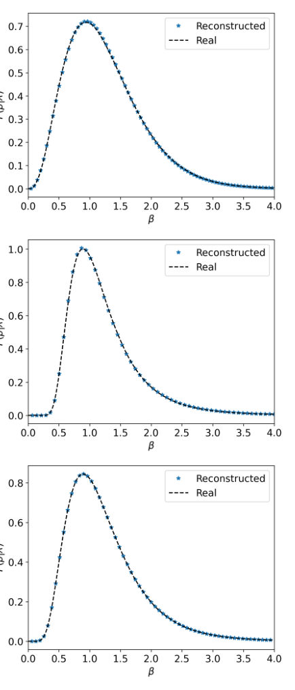
<figcaption class="paper-figure-caption"><b>Fig 1.</b> Figure 1. Reconstruction of the inverse temperature distribution for the three universality classes of superstatistics at u = 0.25 and βS = 1.25. Upper row, gamma distribution (N = 4); middle row, inverse gamma distribution (N = 4); lower row, lognormal distribution (N = 2).</figcaption>
</figure>
<figure class="paper-figure-card">
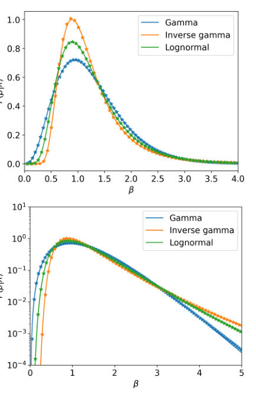
<figcaption class="paper-figure-caption"><b>Fig 2.</b> Figure 2. Comparison of the three universality classes for u = 0.25 and βS = 1.25. Upper panels, normal scale; lower panels, logarithmic scale.</figcaption>
</figure>
<figure class="paper-figure-card">
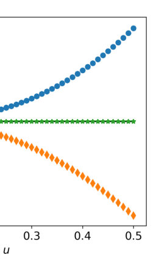
<figcaption class="paper-figure-caption"><b>Fig 3.</b> Figure 3. Worst-case signed relative errors when estimating u for the three universality classes. For each value of u, values of βS between 0.1 and 3 were considered, with N = 4 logarithmic constraints.</figcaption>
</figure>
</div>

<p><strong>Summary.</strong> This paper develops a method to reconstruct the underlying superstatistical temperature distribution from measured single-particle kinetic energies. By employing Jaynes' maximum entropy principle constrained by logarithmic moments, the authors successfully distinguish between three theoretical universality classes (Gamma, Inverse Gamma, Lognormal). This work provides a robust theoretical tool for analyzing non-Maxwellian statistical systems.</p>
<p><strong>Why it may be interesting.</strong> While focused on classical statistical mechanics, the rigorous application of maximum entropy methods to infer underlying physical parameters from complex, non-equilibrium distributions is a powerful theoretical tool applicable to analyzing complex quantum measurements or system dynamics.</p>
<details>
<summary>Detailed structure</summary>
<p><strong>Main problem.</strong> The paper addresses the challenge of reconstructing the underlying superstatistical inverse temperature distribution ($eta$) from observed single-particle kinetic energy data.</p>
<p><strong>Main result.</strong> The authors successfully demonstrate that using Jaynes' maximum entropy principle, constrained by the logarithmic moments of the kinetic energy, can accurately reconstruct the distribution for three distinct superstatistical universality classes.</p>
<p><strong>Method.</strong> The core method involves applying the maximum entropy principle, maximizing relative entropy subject to constraints derived from the logarithmic moments of the kinetic energy distribution.</p>
<p><strong>Model / system.</strong> The study uses the framework of superstatistics, which models non-Maxwellian velocity distributions as mixtures of Maxwellian distributions weighted by a probability density for the inverse temperature $eta$. Three specific universality classes—Gamma, Inverse Gamma, and Lognormal—are analyzed.</p>
<p><strong>Key observables.</strong> Single-particle kinetic energy distribution $P(k|\lambda)$, the superstatistical inverse temperature distribution $P(eta|\lambda)$, and the dimensionless relative inverse temperature variance $u$.</p>
<p><strong>Important parameters / regimes.</strong> The mean inverse temperature ($eta_S$) and the dimensionless relative variance ($u$) are key parameters used to characterize the distributions.</p>
<p><strong>Assumptions / limitations.</strong> The reconstruction relies on the assumption that the underlying distribution can be accurately determined by constraining the maximum entropy functional using the logarithmic moments of the kinetic energy.</p>
<p><strong>Figures summary.</strong> Figure 1 shows the reconstructed inverse temperature and kinetic energy distributions for the three classes. Figure 2 compares the three classes' kinetic energy distributions, showing their near indistinguishability. Figure 3 presents the worst-case signed relative errors for estimating $u$.</p>
<p><strong>Paper structure.</strong> The paper first establishes the superstatistical framework and the difficulty of direct inversion. It then details the maximum entropy approach using logarithmic moment constraints. Finally, it presents the results, demonstrating the successful reconstruction and discrimination between the three universality classes.</p>
</details>
<details>
<summary>Abstract</summary>
<p>The framework of superstatistics can be used to describe non-Maxwellian single-particle velocity distributions as mixtures of Maxwellian distributions, where the weight is imposed by a probability density associated to the inverse temperature $β= 1/(k_B T)$. Among the typical model choices for $β$ are gamma, inverse gamma and lognormal distributions, sometimes called the universality classes of superstatistics. Given a set of observed velocities, however, there is no direct method to determine the underlying temperature distribution, as temperature itself is not a phase-space observable, and numerically inverting the Laplace transform is an unreliable process. In this work, we show that Jaynes' principle of maximum entropy can be used to successfully reconstruct the inverse temperature distribution from data, by using the logarithmic moments of the kinetic energy as constraints. Although the kinetic energy distributions for the three universality classes are almost indistinguishable at the same mean and variance of $β$, the method correctly discriminates between them.</p>
</details>
<p><sub><a href="#top">↑ back to top</a></sub></p>

<p><a id="paper-2609.15612"></a></p>
<h3 id="reducing-decoding-latency-in-quantum-error-correction-by-early-starting-clustering"><a href="http://arxiv.org/abs/2609.15612v1">Reducing Decoding Latency in Quantum Error Correction by Early Starting Clustering</a></h3>
<p><strong>Authors:</strong> Tommaso Peduzzi, Lukas Bödeker, Markus Müller, Luis Colmenarez<br>
<strong>Type:</strong> theory · <strong>Category:</strong> quantum information and computing · <strong>PDF:</strong> <a href="https://arxiv.org/pdf/2609.15612v1">https://arxiv.org/pdf/2609.15612v1</a><br>
<strong>Analysis basis:</strong> full PDF text, analyzed in chunks
<strong>Topic relevance:</strong> <code>quantum measurements</code> <strong>2/5</strong></p>
<div class="figure-strip-hint">↔ Scroll figures horizontally</div>
<div class="paper-figures-scroll">
<figure class="paper-figure-card">
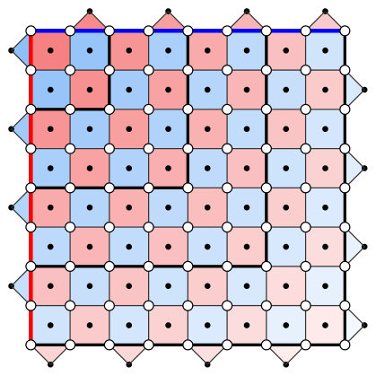
<figcaption class="paper-figure-caption"><b>Fig 1.</b> Figure 1: Illustration of a series of low distance rotated surface codes (distances d = 3, 5, 7, 9), where X (Z) stabilizer generators are indicated by red (blue) color. A representation of the logical operator XL (ZL) is shown as, respectively, a red (blue) colored line along the boundary.</figcaption>
</figure>
<figure class="paper-figure-card">
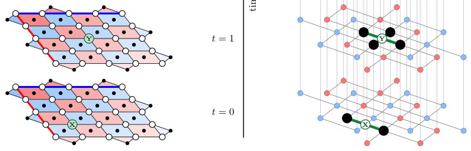
<figcaption class="paper-figure-caption"><b>Fig 2.</b> Figure 2: Measurement process and corresponding decoding graph for a distance-5 rotated surface code over T = 4 rounds of syndrome extraction, with time running from bottom to top. Left: the code patch in each round, with the faults occurring in different rounds and marked on the affected qubits. Right: the corresponding X- and Z-type spacetime decoding graphs, drawn superimposed. A data-qubit error (green) flips a pair of neighboring stabilizers within a round and thus corresponds to a spacelike edge, while a measurement error (red) flips the same stabilizer in two consecutive rounds and corresponds to a timelike edge. Nodes carrying a detection event are filled black; nodes without one...</figcaption>
</figure>
<figure class="paper-figure-card">
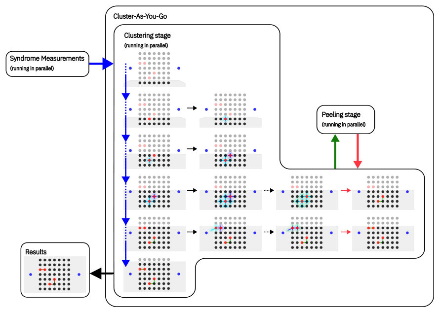
<figcaption class="paper-figure-caption"><b>Fig 3.</b> Figure 3: Comparison of standard UF and CAYG. In both panels, the subfigures show snapshots of the decoding process as clusters grow and merge, with space along the x-axis and time along the y-axis. Within each decoding graph, red edges represent errors, red nodes the corresponding measured syndrome s, and green edges the committed corrections; filled nodes on a gray background mark the section of the decoding graph that has already been measured, and different shades of blue distinguish different clusters. Arrows between subfigures indicate incoming syndrome information (blue), growth (solid black) and merge (dotted black) operations, neutral clusters passed from the clustering to the...</figcaption>
</figure>
<figure class="paper-figure-card">
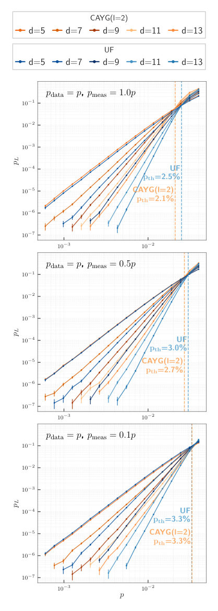
<figcaption class="paper-figure-caption"><b>Fig 4.</b> Figure 4: Threshold plots comparing the Union Find (UF) and Cluster-As-You-Go (CAYG) decoding algo- rithms under phenomenological noise models with dif- ferent ratios of measurement to data-qubit error rates on the rotated surface code, with 106 Monte Carlo tri- als per data point. Logical error rates pL are shown vs. physical error rate p for each code distance and different noise parameters. Error bars show 95% Wilson confi- dence intervals. Effective distances are listed in Table 1.</figcaption>
</figure>
<figure class="paper-figure-card">
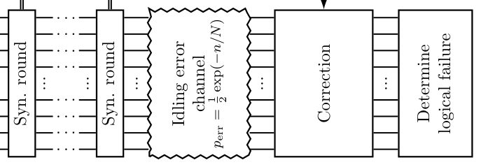
<figcaption class="paper-figure-caption"><b>Fig 5.</b> Figure 5: Illustration of the CAYG decoding procedure and the protocol used to assess real-time decoding performance. CAYG performs clustering in parallel with syndrome extraction. After the final round of stabilizer measurements, the remaining clusters continue to grow until they become neutral, after which the peeling decoder determines the corresponding corrections. The number of cluster-growth steps required after the final stabilizer measurement is shown in Fig. 6. During this post-measurement stage, the data qubits are subject to idling errors. Once decoding is complete, the computed correction is applied, and the logical state is measured to determine whether a logical error has...</figcaption>
</figure>
</div>

<p><strong>Summary.</strong> This paper introduces Cluster-As-You-Go (CAYG), a novel decoding algorithm for Quantum Error Correction that processes syndrome data incrementally as measurements occur. By enabling early, real-time decoding, CAYG significantly reduces latency compared to methods that wait for all measurements. This demonstrates a feasible path toward faster, more practical fault-tolerant quantum computation.</p>
<p><strong>Why it may be interesting.</strong> While focused on QEC, the concept of pipelining computation with data acquisition—processing results immediately rather than batching them—is highly relevant to designing real-time control systems for quantum hardware.</p>
<details>
<summary>Detailed structure</summary>
<p><strong>Main problem.</strong> The primary challenge is reducing the decoding latency in Quantum Error Correction (QEC) to enable fault-tolerant quantum computation and avoid the syndrome data backlog problem.</p>
<p><strong>Main result.</strong> The proposed Cluster-As-You-Go (CAYG) decoder enables real-time, early-starting decoding by processing syndrome information concurrently with measurements, achieving an improved speed-accuracy trade-off.</p>
<p><strong>Method.</strong> CAYG modifies the Union-Find decoder by allowing cluster formation and error correction to begin incrementally as syndrome measurements arrive, rather than waiting for the entire set of measurements to complete.</p>
<p><strong>Model / system.</strong> The work is primarily demonstrated on the surface code, a topological stabilizer code implemented on a 2D lattice. Decoding involves finding a minimum-weight perfect matching on a graph representing syndrome defects.</p>
<p><strong>Key observables.</strong> Decoding latency, decoding accuracy, logical error probability (p_L), and the effective distance of the code.</p>
<p><strong>Important parameters / regimes.</strong> The cluster lifetime parameter ($l$), which controls the temporal buffer for merging defects, and the error rates ($p_{	ext{data}}, p_{	ext{meas}}$).</p>
<p><strong>Assumptions / limitations.</strong> The standard Union-Find decoder assumes access to the complete syndrome history; CAYG introduces a trade-off by committing corrections based on partial information.</p>
<p><strong>Figures summary.</strong> Figures illustrate the comparison between standard sequential decoding (UF) and pipelined CAYG decoding, showing how CAYG processes data streams in real-time, and detail the failure mechanisms in staircase chains when the temporal buffer ($l$) is set to zero.</p>
<p><strong>Paper structure.</strong> The paper first identifies the latency bottleneck in QEC decoding. It then introduces CAYG as a temporal parallelization technique extending the Union-Find decoder. Subsequent analysis focuses on the role of the cluster lifetime parameter ($l$) to balance speed against the risk of premature, inaccurate error correction.</p>
</details>
<details>
<summary>Abstract</summary>
<p>In quantum error correction, fast low-latency decoding is essential for fault-tolerant quantum computation, as delays in processing syndrome data can lead to the backlog problem. Existing decoders, including parallelizable approaches such as Union-Find, begin decoding only after all stabilizer measurement outcomes from an error-correction cycle have been received, inherently introducing a delay before decoding begins. We introduce Cluster-As-You-Go (CAYG), a modification of the Union-Find decoder that processes syndrome information during stabilizer measurements by clustering and correcting errors as they appear. This approach reduces the size of the remaining decoding problem at the end of the quantum error correction cycle and, consequently, the time required to complete the decoding process. While this early start of clustering incurs a modest reduction in decoding accuracy, it preserves the decoder's scalability. Surface-code simulations show that the resulting reduction in post-measurement idling can outweigh the accuracy loss, yielding an improved speed-accuracy trade-off. These results demonstrate that real-time, early-starting decoding during QEC cycles is both feasible and can be advantageous for quantum error correction. Demonstrated here for the surface code, CAYG is broadly applicable to other quantum error-correcting codes, which allow for clustering-based decoding approaches, and is extensible to dedicated real-time decoding hardware.</p>
</details>
<p><sub><a href="#top">↑ back to top</a></sub></p>

<p><a id="paper-2609.14519"></a></p>
<h3 id="robustness-of-hidden-variable-theories-and-matrix-scaling"><a href="http://arxiv.org/abs/2609.14519v1">Robustness of Hidden-Variable Theories and Matrix Scaling</a></h3>
<p><strong>Authors:</strong> Giulio Malavolta, Harold Nieuwboer, Akshay Ramachandran, Michael Walter<br>
<strong>Type:</strong> theory · <strong>Category:</strong> quantum information and computing · <strong>PDF:</strong> <a href="https://arxiv.org/pdf/2609.14519v1">https://arxiv.org/pdf/2609.14519v1</a><br>
<strong>Analysis basis:</strong> full PDF text, analyzed in chunks
<strong>Topic relevance:</strong> <code>quantum measurements</code> <strong>2/5</strong></p>
<div class="figure-strip-hint">↔ Scroll figures horizontally</div>
<div class="paper-figures-scroll">
<figure class="paper-figure-card">
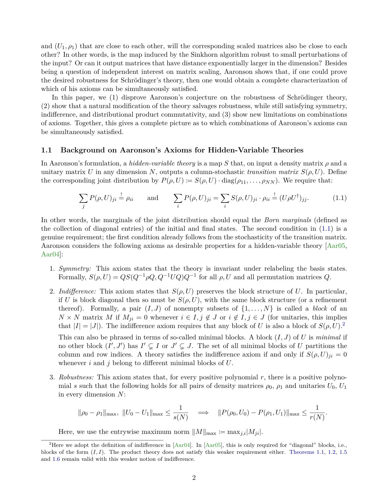
<figcaption class="paper-figure-caption"><b>Fig 1.</b> Low-resolution page preview, page 2</figcaption>
</figure>
<figure class="paper-figure-card">
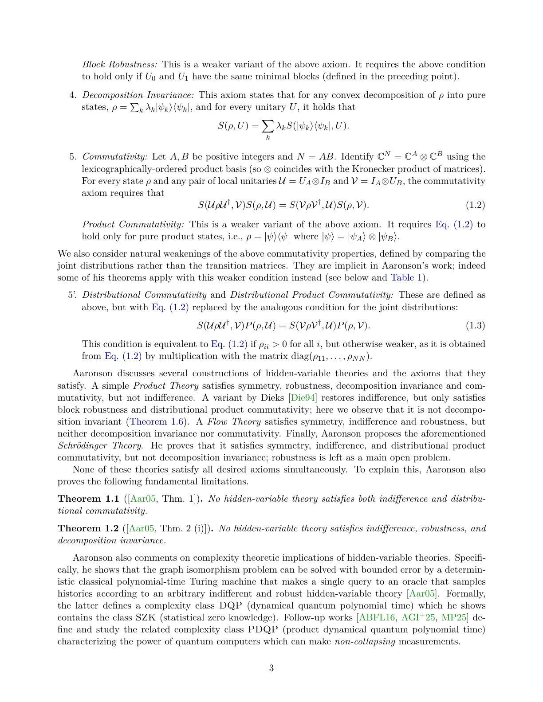
<figcaption class="paper-figure-caption"><b>Fig 2.</b> Low-resolution page preview, page 3</figcaption>
</figure>
<figure class="paper-figure-card">
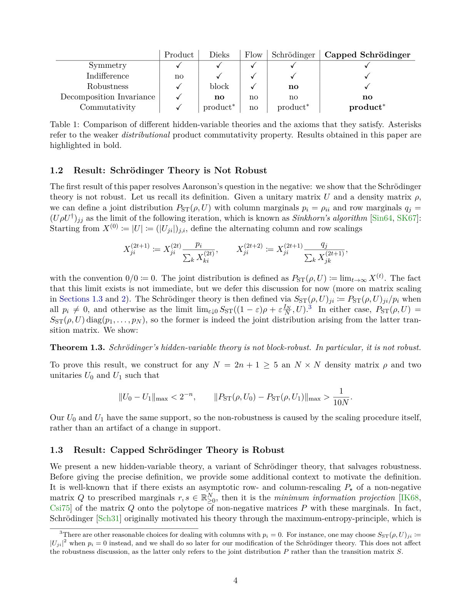
<figcaption class="paper-figure-caption"><b>Fig 3.</b> Low-resolution page preview, page 4</figcaption>
</figure>
<figure class="paper-figure-card">
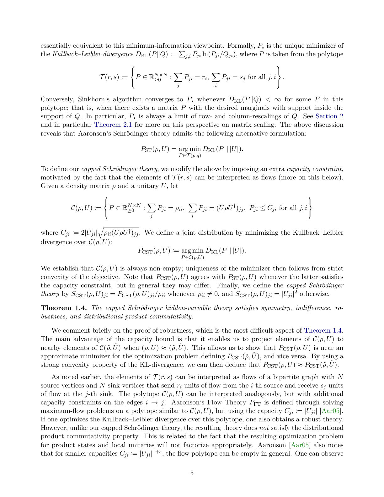
<figcaption class="paper-figure-caption"><b>Fig 4.</b> Low-resolution page preview, page 5</figcaption>
</figure>
<figure class="paper-figure-card">
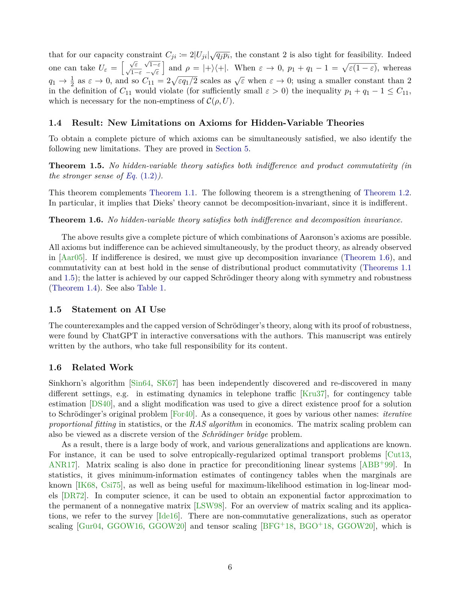
<figcaption class="paper-figure-caption"><b>Fig 5.</b> Low-resolution page preview, page 6</figcaption>
</figure>
</div>

<p><strong>Summary.</strong> This work rigorously analyzes the mathematical structure of hidden-variable theories in quantum mechanics. It disproves the robustness of the standard Schrödinger theory using a counterexample. Crucially, it proposes and proves a modified, 'capped' theory that successfully maintains robustness while satisfying key physical axioms.</p>
<p><strong>Why it may be interesting.</strong> It provides deep insights into the fundamental mathematical axioms required for any theory attempting to assign classical probabilities to quantum measurements, which has implications for understanding quantum foundations and computational complexity.</p>
<details>
<summary>Detailed structure</summary>
<p><strong>Main problem.</strong> The paper investigates the mathematical robustness of hidden-variable theories in quantum mechanics, specifically challenging the conjecture that the Schrödinger theory is stable under small input perturbations.</p>
<p><strong>Main result.</strong> The original Schrödinger theory is shown to be non-robust, but a modified 'capped' version of the theory is proposed and proven to be robust while satisfying several desirable axioms.</p>
<p><strong>Method.</strong> The analysis uses the Sinkhorn algorithm to compute joint probability distributions from marginal constraints and employs rigorous mathematical proofs involving matrix norms and divergence measures to test stability.</p>
<p><strong>Model / system.</strong> The model involves quantum states described by density matrices ($
ho$) and time evolution governed by unitary matrices ($U$). The core mathematical structure is the joint probability distribution $P(
ho, U)$ derived from these quantum elements.</p>
<p><strong>Key observables.</strong> Joint probability distributions, total variation distance, entrywise maximum norm ($\lVert \cdot 
Vert_{\max}$), and the satisfaction of axioms like robustness and indifference.</p>
<p><strong>Important parameters / regimes.</strong> The degree of perturbation ($\delta$) in the input states and unitaries, and the dimension $N$ of the system.</p>
<p><strong>Assumptions / limitations.</strong> The analysis builds upon Aaronson's axiomatic framework for hidden-variable theories, assuming the existence of marginal constraints derived from quantum mechanics.</p>
<p><strong>Figures summary.</strong> Table 1 compares various hidden-variable theories against key axioms (Symmetry, Indifference, Robustness, etc.), highlighting the performance of the proposed theories.</p>
<p><strong>Paper structure.</strong> The paper first introduces the Schrödinger theory and its conjectured robustness. It then presents a counterexample disproving the conjecture. Subsequently, a modified, robust 'capped' theory is introduced, followed by proofs establishing its robustness and demonstrating the incompatibility of certain axioms.</p>
</details>
<details>
<summary>Abstract</summary>
<p>Motivated by quantum foundations and complexity theory, Aaronson formalized a hidden-variable theory inspired by a proposal by Schrödinger. To any quantum state and unitary, this Schrödinger theory assigns a joint probability distribution via the Sinkhorn algorithm: rescale the columns and rows of the entrywise modulus of the unitary so that the marginals match the Born rule for the initial and final quantum states, respectively. He conjectured that this map is robust, i.e., inverse polynomially small perturbations in the inputs lead to inverse polynomially small perturbations of the joint distribution, which is important for complexity theoretic applications. We present a counterexample to this conjecture: We construct a pure state and two unitaries that are exponentially close, yet the joint probability distributions assigned by the Schrödinger theory differ by at least an inverse-linear term in at least one entry, and by a constant in total variation distance. We also propose a modified version of Schrödinger's theory that satisfies robustness, while retaining all of its other desirable properties. This yields a complete picture of which axioms of Aaronson can be simultaneously satisfied by hidden-variable theories.</p>
</details>
<p><sub><a href="#top">↑ back to top</a></sub></p>

<p><a id="paper-2609.15790"></a></p>
<h3 id="security-framework-for-practical-quantum-key-distribution-with-imperfect-devices"><a href="http://arxiv.org/abs/2609.15790v1">Security framework for practical quantum key distribution with imperfect devices</a></h3>
<p><strong>Authors:</strong> Jerome Wiesemann, John Burniston, Devashish Tupkary, Norbert Lütkenhaus<br>
<strong>Type:</strong> theory · <strong>Category:</strong> quantum information and computing · <strong>PDF:</strong> <a href="https://arxiv.org/pdf/2609.15790v1">https://arxiv.org/pdf/2609.15790v1</a><br>
<strong>Analysis basis:</strong> full PDF text, analyzed in chunks
<strong>Topic relevance:</strong> <code>quantum measurements</code> <strong>2/5</strong></p>
<div class="figure-strip-hint">↔ Scroll figures horizontally</div>
<div class="paper-figures-scroll">
<figure class="paper-figure-card">
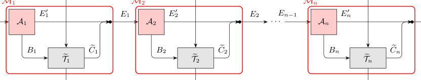
<figcaption class="paper-figure-caption"><b>Fig 1.</b> Figure 1: Sequence of channels describing the evolution of the state described in the modified protocol from Lemma 1.</figcaption>
</figure>
<figure class="paper-figure-card">
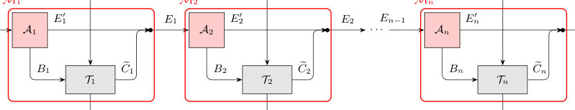
<figcaption class="paper-figure-caption"><b>Fig 2.</b> Figure 2: Sequence of channels describing the evolution of the state described in the Virtual entanglement-based Protocol [28, Fig. 4].</figcaption>
</figure>
<figure class="paper-figure-card">
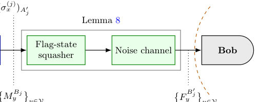
<figcaption class="paper-figure-caption"><b>Fig 3.</b> Figure 3: Sequence of source maps and squashing maps used in Sec. 4.2.</figcaption>
</figure>
<figure class="paper-figure-card">
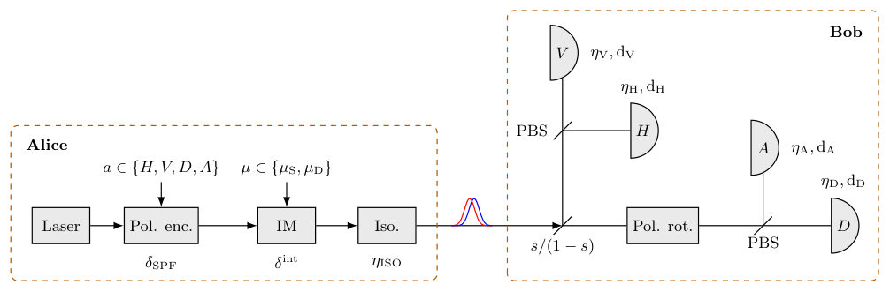
<figcaption class="paper-figure-caption"><b>Fig 4.</b> Figure 4: Passive polarization-encoded decoy-state BB84 setup with various device imperfections, including imperfect state encoding (δSPF) with angular uncertainty (∆θ), intensity fluctuations (δint), Trojan-horse attacks (ηISO), imperfect detection efficiencies (ηi) with uncertainty ∆η, dark counts (di) and imperfect passive basis choice beamsplitter (s) with uncertainty (∆s), cf. Table II.</figcaption>
</figure>
<figure class="paper-figure-card">
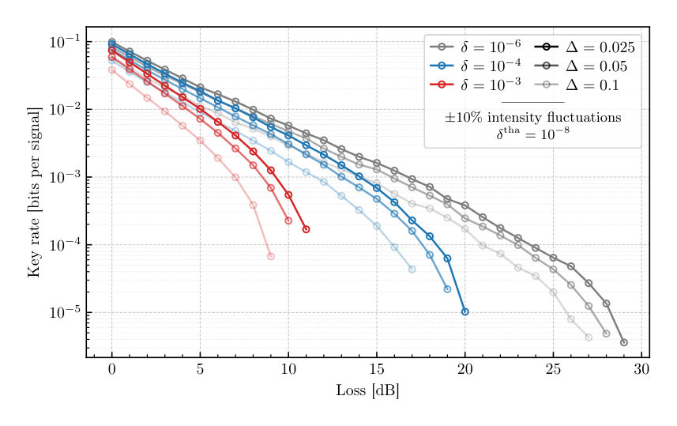
<figcaption class="paper-figure-caption"><b>Fig 5.</b> Figure 5: Finite-size secure key rate for the passive decoy-state BB84 setup depicted in Fig. 4 with the imperfections listed in Table III and the parameters listed in Table IV. We show various combinations of single-photon source fidelity bounds δ (e.g. encoding uncertainty δenc) and detector characterization uncertainty ∆. For simplicity, the detector efficiency and beamsplitting ratio uncertainties are taken to be equal, ∆η = ∆s = ∆. Every curve additionally includes ±10% intensity fluctuations, Trojan-horse leakage δtha = 10−8, state-preparation flaws δSPF = 0.063, and upper-bounded detector dark-count probabilities dU i = 10−8.</figcaption>
</figure>
</div>

<p><strong>Summary.</strong> This paper develops a comprehensive security framework for Quantum Key Distribution (QKD) that rigorously accounts for imperfections in physical devices and the uncertainty in characterizing those devices. By employing the Marginal-Constrained Entropy Accumulation Theorem, the authors provide a unified method to calculate achievable key rates even when multiple, complex imperfections are present. This advances the field by bridging the gap between theoretical security proofs and real-world hardware limitations.</p>
<p><strong>Why it may be interesting.</strong> This work provides a rigorous, general security foundation for QKD that moves beyond idealized models by incorporating realistic hardware flaws, which is crucial for the practical deployment of quantum communication technologies.</p>
<details>
<summary>Detailed structure</summary>
<p><strong>Main problem.</strong> The paper addresses the critical challenge of developing a security proof for practical Quantum Key Distribution (QKD) protocols that accounts for both inherent device imperfections and the uncertainty regarding the precise behavior of these devices.</p>
<p><strong>Main result.</strong> The authors present a unified, modular security framework using the Marginal-Constrained Entropy Accumulation Theorem (MEAT) that successfully derives achievable key rates even when multiple, imperfectly characterized sources and detectors are combined.</p>
<p><strong>Method.</strong> The methodology involves applying the MEAT theorem to a generic prepare-and-measure QKD protocol, utilizing sequences of proof technique independent source maps and squashing maps to bound the information leakage to an eavesdropper.</p>
<p><strong>Model / system.</strong> The analysis is applied to generic prepare-and-measure QKD protocols, such as decoy-state BB84, modeling the system through state preparation, transmission, measurement, and post-processing steps, all while incorporating realistic device flaws.</p>
<p><strong>Key observables.</strong> Practical key rates, security bounds ($\epsilon$), and the achievable key length $\ell(\hat{c}_{n-1})$.</p>
<p><strong>Important parameters / regimes.</strong> Device imperfections (e.g., source flaws, detector efficiency mismatch, intensity fluctuations) and the number of protocol rounds ($n$).</p>
<p><strong>Assumptions / limitations.</strong> The framework assumes that device imperfections belong to known sets determined by characterization, and that source/detector imperfections vary independently from round to round.</p>
<p><strong>Figures summary.</strong> Figures illustrate the state evolution sequence in the modified protocol, show achievable key rates combining multiple imperfections, and detail the convex optimization problem used to determine the final key rate bound.</p>
<p><strong>Paper structure.</strong> The paper builds mathematically by defining tools like source maps and squashing maps, establishing a general security statement for imperfect devices, and then applying this framework to specific protocols like decoy-state BB84.</p>
</details>
<details>
<summary>Abstract</summary>
<p>Practical quantum key distribution (QKD) systems inevitably exhibit imperfections in both the source and detector. At the same time, the behavior of these imperfect devices is never exactly known due to characterization uncertainty, parameter fluctuations, and potential influence by an adversary. In this work, we present a security proof for generic prepare-and-measure QKD protocols, including decoy-state BB84, with imperfect and imperfectly characterized sources and detectors using the marginal-constrained entropy accumulation theorem (MEAT). Our approach uses a sequence of proof technique independent source maps and squashing maps, yielding a very modular framework. We show that practical key rates can be achieved even when multiple imperfections are combined. More broadly, our work provides a unified foundation that avoids the need for dedicated protocol-specific arguments and can be readily extended to other protocols and device imperfections.</p>
</details>
<p><sub><a href="#top">↑ back to top</a></sub></p>

<p><a id="paper-2609.14186"></a></p>
<h3 id="the-global-topology-of-orthogonally-decomposable-tensor-landscapes"><a href="http://arxiv.org/abs/2609.14186v1">The Global Topology of Orthogonally Decomposable Tensor Landscapes</a></h3>
<p><strong>Authors:</strong> Chunyin Siu<br>
<strong>Type:</strong> theory · <strong>Category:</strong> disordered systems and neural networks · <strong>PDF:</strong> <a href="https://arxiv.org/pdf/2609.14186v1">https://arxiv.org/pdf/2609.14186v1</a><br>
<strong>Analysis basis:</strong> full PDF text, analyzed in chunks
<strong>Topic relevance:</strong> <code>analog quantum simulation</code> <strong>2/5</strong></p>
<div class="figure-strip-hint">↔ Scroll figures horizontally</div>
<div class="paper-figures-scroll">
<figure class="paper-figure-card">
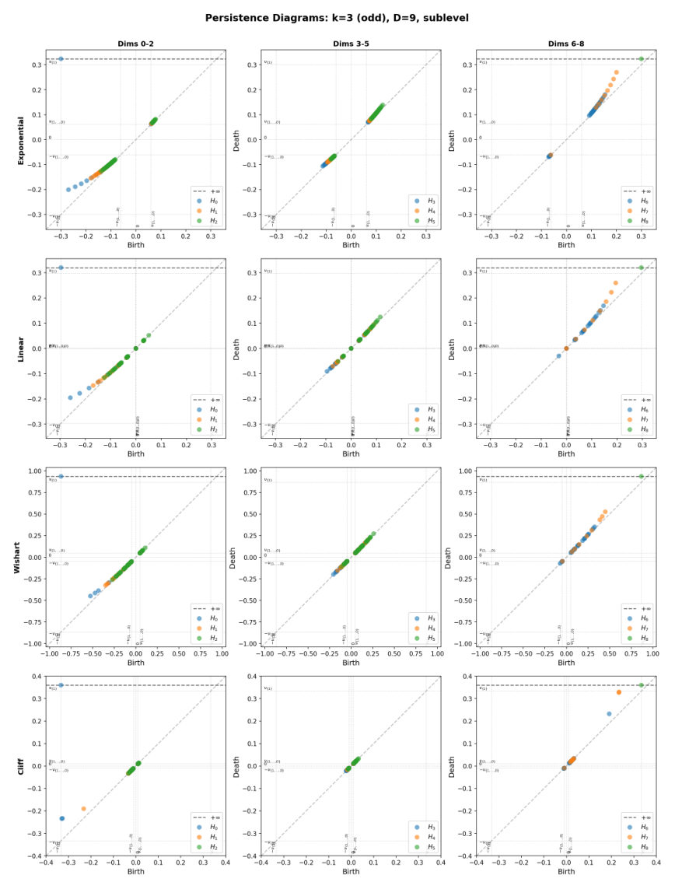
<figcaption class="paper-figure-caption"><b>Fig 1.</b> Figure 1: Persistence diagrams of the persistent homology Hq(Xt; Z/2Z) of fk,D’s, with k = 3, sublevel filtrations Xt with coefficients in Z/2Z, where D = 9 and the coefficients λi’s are specified in Section 4. The first columns correspond to the persistence diagrams at homological dimensions 0 −2, the other columns, 3 −5 and 6 −8. See Sections A and 5.1 for definitions.</figcaption>
</figure>
<figure class="paper-figure-card">
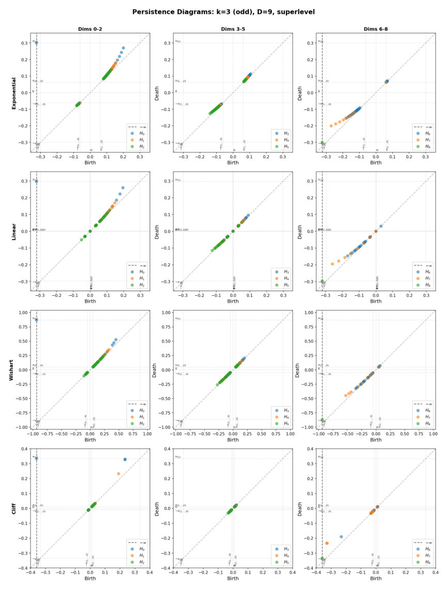
<figcaption class="paper-figure-caption"><b>Fig 2.</b> Figure 2: Persistence diagrams of the persistent homology Hq(Xt; Z/2Z) of fk,D’s, with k = 3, superlevel filtrations Xt with coefficients in Z/2Z, where D = 9 and the coefficients λi’s are specified in Section 4. The first columns correspond to the persistence diagrams at homological dimensions 0 −2, the other columns, 3 −5 and 6 −8. See Sections A and 5.1 for definitions.</figcaption>
</figure>
<figure class="paper-figure-card">
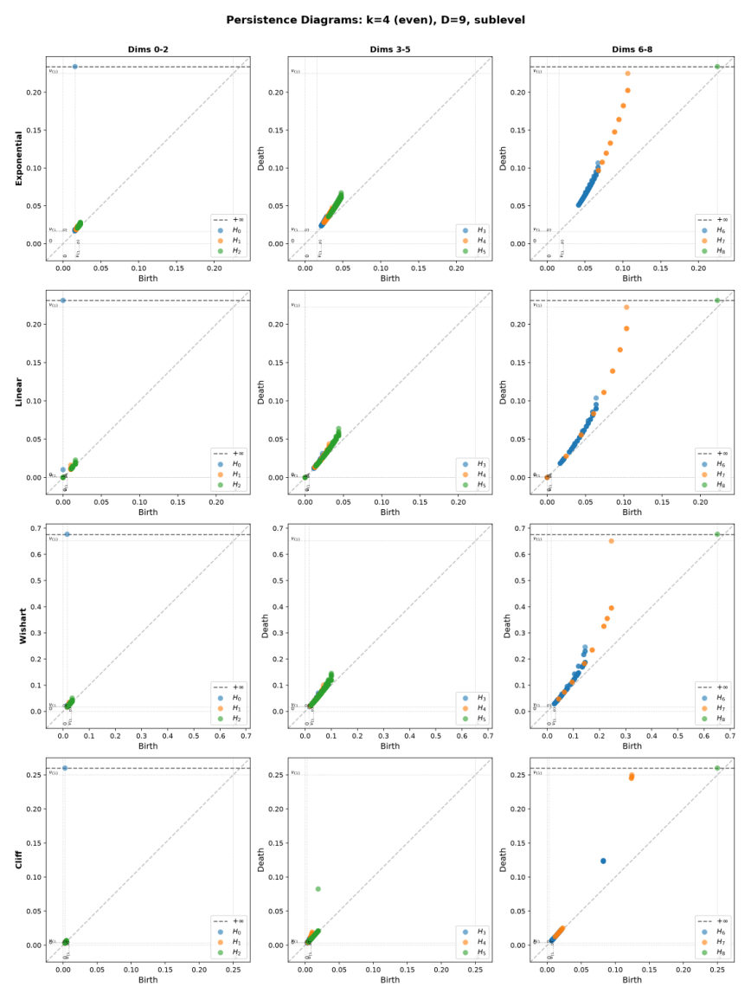
<figcaption class="paper-figure-caption"><b>Fig 3.</b> Figure 3: Persistence diagrams of the persistent homology Hq(Xt; Z/2Z) of fk,D’s, with k = 4, sublevel filtrations Xt with coefficients in Z/2Z, where D = 9 and the coefficients λi’s are specified in Section 4. The first columns correspond to the persistence diagrams at homological dimensions 0 −2, the other columns, 3 −5 and 6 −8. See Sections A and 5.1 for definitions.</figcaption>
</figure>
<figure class="paper-figure-card">
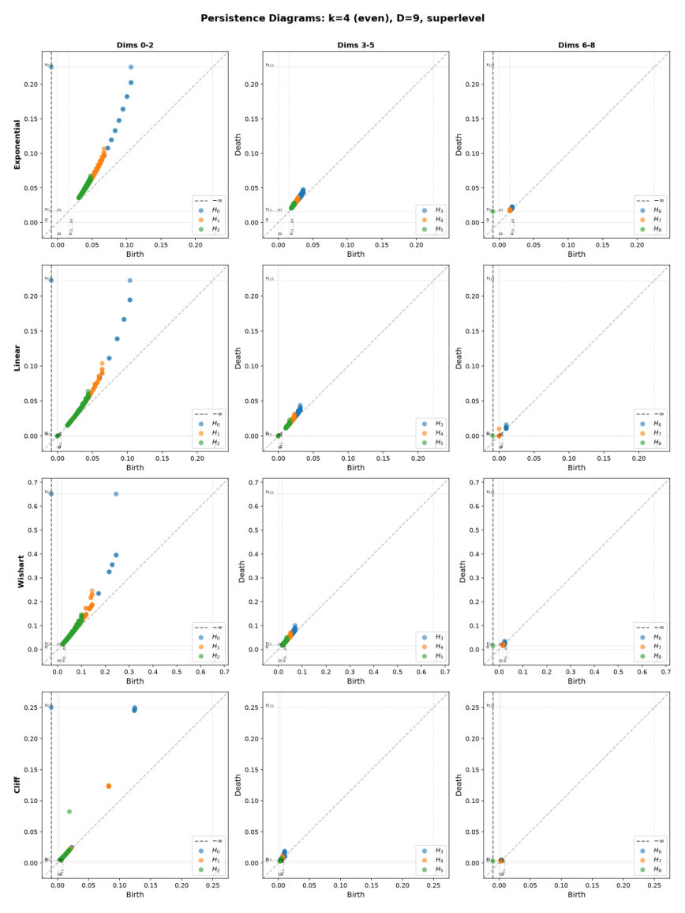
<figcaption class="paper-figure-caption"><b>Fig 4.</b> Figure 4: Persistence diagrams of the persistent homology Hq(Xt; Z/2Z) of fk,D’s, with k = 4, superlevel filtrations Xt with coefficients in Z/2Z, where D = 9 and the coefficients λi’s are specified in Section 4. The first columns correspond to the persistence diagrams at homological dimensions 0 −2, the other columns, 3 −5 and 6 −8. See Sections A and 5.1 for definitions.</figcaption>
</figure>
<figure class="paper-figure-card">
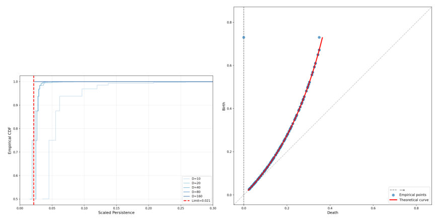
<figcaption class="paper-figure-caption"><b>Fig 5.</b> Figure 5: Convergence of persistent homology of fk,D’s, where k = 4 and the coefficients λi’s are Wishart eigenvalues with γ = 2. On the left panel, we show the convergence of the cumulative distribution functions of scaled persistence as the ambient dimension D increases from 10 to 160. On the left, we compare the persistence diagram with ambient dimension D = 80 with the theoretical limit.</figcaption>
</figure>
</div>

<p><strong>Summary.</strong> This theoretical paper analyzes the global topology of energy landscapes derived from symmetric tensors, modeling systems like mean-field spin glasses. Using persistent homology, the authors derive exact formulas for the topological features of these landscapes. The work provides deep insights into the typical structure of high-dimensional energy surfaces, even when the underlying critical points are numerous.</p>
<p><strong>Why it may be interesting.</strong> The study of energy landscapes and their topology is fundamental to understanding the phase space structure of complex quantum systems, including spin glasses and optimization problems relevant to quantum machine learning.</p>
<details>
<summary>Detailed structure</summary>
<p><strong>Main problem.</strong> The paper investigates the global topological structure of the energy landscape defined by a homogeneous form associated with a symmetric tensor.</p>
<p><strong>Main result.</strong> The authors determine the persistent homology of the sublevel and superlevel filtrations in closed form for specialized tensors, and prove laws of large numbers for the typical global topology when coefficients are random.</p>
<p><strong>Method.</strong> The primary methods involve using persistent homology (Topological Data Analysis) to characterize the global topology, alongside techniques from differential geometry (Morse theory, gradient flow analysis) to prove necessary conditions like the Smale condition.</p>
<p><strong>Model / system.</strong> The model is the energy function $f_{k,D}(\mathbf{x})$ defined by a homogeneous form associated with a symmetric order-$k$ tensor, restricted to the unit sphere $S^{D-1}$. This function models the objective of best rank-one tensor approximation or the energy of a mean-field spin glass.</p>
<p><strong>Key observables.</strong> Persistent homology, persistence diagrams, and the global topology of the energy landscape.</p>
<p><strong>Important parameters / regimes.</strong> Tensor order $k$, ambient dimension $D$, and the nature of the coefficients (e.g., random eigenvalues from a Wishart ensemble).</p>
<p><strong>Assumptions / limitations.</strong> The analysis is initially restricted to positive orthogonally decomposable tensors; later sections prove the Smale condition for the gradient flow associated with the function.</p>
<p><strong>Figures summary.</strong> The notes do not describe specific figures, but mention tables summarizing persistence diagram points for different values of $k$ and $D$.</p>
<p><strong>Paper structure.</strong> The paper progresses from defining the physical/mathematical problem (tensor landscape topology) to applying advanced topological tools (persistent homology) to derive closed-form results for specific cases, and finally proving necessary geometric conditions (Smale condition) required for the analysis.</p>
</details>
<details>
<summary>Abstract</summary>
<p>The homogeneous form associated with a symmetric tensor, restricted to the sphere, is the objective of the best rank-one approximation problem and, with random coefficients, the energy of a mean-field spin glass. Its critical points have been studied extensively, but the global organization of the landscape they form is far less understood. We study this global structure for positive orthogonally decomposable tensors. We determine the persistent homology of the sublevel and superlevel filtrations in closed form, for every homological dimension $q$, every ambient dimension $D$ and every tensor order $k$, via a recurrence in the ambient dimension. Taking the coefficients to be random, we further prove laws of large numbers for the resulting persistence diagrams at dimension $0$ and $D-2$, giving an exact description of the typical global topology of a spin-glass-like energy landscape. We illustrate our results with numerical computations and simulations.</p>
</details>
<p><sub><a href="#top">↑ back to top</a></sub></p>

<p><a id="paper-2609.14203"></a></p>
<h3 id="trace-norm-overlaps-of-quantum-states-interpolation-equality-and-data-processing-rigidity"><a href="http://arxiv.org/abs/2609.14203v1">Trace-Norm Overlaps of Quantum States: Interpolation, Equality, and Data-Processing Rigidity</a></h3>
<p><strong>Authors:</strong> Zahra Maleki Khouzani, Seyed Mahmoud Manjegani<br>
<strong>Type:</strong> theory · <strong>Category:</strong> other · <strong>PDF:</strong> <a href="https://arxiv.org/pdf/2609.14203v1">https://arxiv.org/pdf/2609.14203v1</a><br>
<strong>Analysis basis:</strong> full PDF text, analyzed in chunks
<strong>Topic relevance:</strong> <code>quantum measurements</code> <strong>2/5</strong></p>
<div class="figure-strip-hint">↔ Scroll figures horizontally</div>
<div class="paper-figures-scroll">
<figure class="paper-figure-card">

<figcaption class="paper-figure-caption"><b>Fig 1.</b> Low-resolution page preview, page 2</figcaption>
</figure>
<figure class="paper-figure-card">

<figcaption class="paper-figure-caption"><b>Fig 2.</b> Low-resolution page preview, page 3</figcaption>
</figure>
<figure class="paper-figure-card">

<figcaption class="paper-figure-caption"><b>Fig 3.</b> Low-resolution page preview, page 4</figcaption>
</figure>
<figure class="paper-figure-card">

<figcaption class="paper-figure-caption"><b>Fig 4.</b> Low-resolution page preview, page 5</figcaption>
</figure>
<figure class="paper-figure-card">

<figcaption class="paper-figure-caption"><b>Fig 5.</b> Low-resolution page preview, page 6</figcaption>
</figure>
</div>

<p><strong>Summary.</strong> This paper rigorously studies generalized trace-norm overlaps, $\Phi_\alpha$ and $F_\alpha$, which interpolate between different measures of quantum state similarity. It establishes that these overlaps are log-convex and that the standard root fidelity is unique in preserving monotonicity under general quantum channels. The findings provide precise conditions for when generalized overlaps simplify or fail to capture physical symmetries.</p>
<p><strong>Why it may be interesting.</strong> This work provides deep structural insights into quantum state distinguishability measures beyond standard fidelity, linking them to fundamental concepts like Rényi divergence and data processing bounds.</p>
<details>
<summary>Detailed structure</summary>
<p><strong>Main problem.</strong> The paper investigates the properties of generalized directed trace-norm overlaps, $\Phi_\alpha(
ho, \sigma)$, and their symmetrized forms, $F_\alpha(
ho, \sigma)$, for quantum states $
ho$ and $\sigma$. The goal is to understand how these overlaps vary with the parameter $\alpha$ and characterize the conditions for equality and monotonicity.</p>
<p><strong>Main result.</strong> The directed overlap $\Phi_\alpha$ is proven to be log-convex, and the symmetrized overlap $F_\alpha$ is only monotone under all quantum channels when $\alpha = 1/2$, recovering the standard root fidelity. Furthermore, the difference between the Petz overlap and the directed overlap vanishes exactly when the states commute.</p>
<p><strong>Method.</strong> The analysis uses functional calculus on density operators, deriving explicit formulas for commuting states, and employing techniques from quantum information theory, such as testing for data-processing monotonicity under quantum channels.</p>
<p><strong>Model / system.</strong> The system involves density operators $
ho$ and $\sigma$ on a separable Hilbert space, representing quantum states. The analysis is generalized from finite dimensions to separable Hilbert spaces, and specific tests involve diagonal pinching of real qubit states.</p>
<p><strong>Key observables.</strong> Directed trace-norm overlap $\Phi_\alpha(
ho, \sigma)$, symmetrized overlap $F_\alpha(
ho, \sigma)$, and the root Uhlmann–Jozsa fidelity $F(
ho, \sigma)$.</p>
<p><strong>Important parameters / regimes.</strong> The interpolation parameter $\alpha \in (0, 1)$, and the quantum channel $E$ used for data-processing tests.</p>
<p><strong>Assumptions / limitations.</strong> The analysis often assumes the states commute ($
ho\sigma = \sigma
ho$) to derive explicit bounds, but key results extend these findings to non-commuting cases.</p>
<p><strong>Figures summary.</strong> Not specified in the notes.</p>
<p><strong>Paper structure.</strong> The paper systematically analyzes the properties of $\Phi_\alpha$ and $F_\alpha$, first establishing log-convexity and bounds (especially for commuting states), then investigating the connection to Rényi divergence, and finally focusing on the data-processing behavior, proving that only $\alpha=1/2$ preserves monotonicity.</p>
</details>
<details>
<summary>Abstract</summary>
<p>Let $ρ$ and $σ$ be density operators on a separable Hilbert space. For $0<α<1$, we study the directed trace-norm overlap $Φ_α(ρ,σ)=\|ρ^ασ^{1-α}\|_1$ and its symmetrized form $\mathcal F_α(ρ,σ)=\frac12\bigl(Φ_α(ρ,σ)+Φ_{1-α}(ρ,σ)\bigr)$. At $α=\tfrac12$, both quantities coincide with the root Uhlmann--Jozsa fidelity. Our aim is not to introduce a new notion of fidelity, but to understand how these overlaps vary with the parameter and when equality occurs in the resulting inequalities. We first prove that $α\mapstoΦ_α(ρ,σ)$ is log-convex. This yields a sharp lower bound for $\mathcal F_α$ in terms of the root fidelity, together with a stronger intermediate geometric-mean bound. We also show that $Φ_α$ is the trace functional $Q_{α,1/2}$ associated with the $α$-$z$ Renyi divergence, which connects the directed overlap with the known $α$-$z$ Renyi theory. We then determine the exact data-processing behavior of the symmetrized family. Universal monotonicity under quantum channels holds only at $α=\tfrac12$; for every other value of $α$, it already fails under diagonal pinching of faithful real qubit states. In finite dimensions, we give a complete spectral description of the equality cases and provide explicit noncommuting examples. We also discuss some natural questions about overlap-preserving maps. Finally, we prove that the difference between the Petz overlap and the directed trace-norm overlap vanishes exactly when $ρ$ and $σ$ commute, without requiring either faithfulness or any additional support assumption.</p>
</details>
<p><sub><a href="#top">↑ back to top</a></sub></p>

<p><a id="paper-2609.15829"></a></p>
<h3 id="higher-order-quantum-thermodynamics-equilibrium-and-causal-structure"><a href="http://arxiv.org/abs/2609.15829v1">Higher-order quantum thermodynamics: equilibrium and causal structure</a></h3>
<p><strong>Authors:</strong> Simon Milz, Kyrylo Simonov, Zoltán Zimborás, Tamal Guha, Saptarshi Roy, Giulio Chiribella<br>
<strong>Type:</strong> theory · <strong>Category:</strong> statistical mechanics · <strong>PDF:</strong> <a href="https://arxiv.org/pdf/2609.15829v1">https://arxiv.org/pdf/2609.15829v1</a><br>
<strong>Analysis basis:</strong> full PDF text, analyzed in chunks
<strong>Topic relevance:</strong> <code>Keldysh / 2PI / non-Gaussian methods</code> <strong>1/5</strong> · <code>analog quantum simulation</code> <strong>1/5</strong> · <code>correlated / nonlocal dissipation</code> <strong>1/5</strong> · <code>driven-dissipative phase transition</code> <strong>1/5</strong> · <code>methods for driven-dissipative</code> <strong>1/5</strong> · <code>non-equilibrium universality</code> <strong>1/5</strong> · <code>quantum measurements</code> <strong>1/5</strong></p>
<div class="figure-strip-hint">↔ Scroll figures horizontally</div>
<div class="paper-figures-scroll">
<figure class="paper-figure-card">

<figcaption class="paper-figure-caption"><b>Fig 1.</b> Figure 1. Equilibrium processes. (top) To transform quantum states, an experimenter receives a thermodynamic system in a state 𝜌(depicted by the charged battery) and manipulates it via a trans- formation G, depleting free energy (depicted by the discharged bat- tery). We consider such a process &quot;in equilibrium&quot;, if it preserves the Gibbs state 𝜏, leading to the set of GP and GPTP transforma- tions (see Sec. II C). (bottom) Similarly, an equilibrium supermap S transforms state transformations, leaving the set of Gibbs-preserving transformations invariant. This requirement leads to several possible inequivalent sets of equilibrium supermaps (GPP, GPTPP, CGPP, CGPTPP, see Sec. III A)....</figcaption>
</figure>
<figure class="paper-figure-card">

<figcaption class="paper-figure-caption"><b>Fig 2.</b> Figure 2. The basic type of quantum supermap. The basic type of quantum supermap S (depicted in magenta) transforms a quantum channel/operation T with input 𝐼and output 𝑂(light blue on the left side of the equality sign), into a new quantum channel/operation T ′ with input 𝑃and output 𝐹(light blue on the right side of the equality sign).</figcaption>
</figure>
<figure class="paper-figure-card">

<figcaption class="paper-figure-caption"><b>Fig 3.</b> Figure 3. CP supermaps. A supermap S is CP if the map S ⊗I𝑎→𝑏 transforms CP maps T ∈CP(𝐼⊗𝑎,𝑂⊗𝑏) to CP maps T ′ ∈CP(𝑃⊗ 𝑎, 𝐹⊗𝑏) for every possible pair of finite-dimensional systems 𝑎and 𝑏.</figcaption>
</figure>
<figure class="paper-figure-card">

<figcaption class="paper-figure-caption"><b>Fig 4.</b> Figure 4. Structure of superchannels. Any proper supermap S : CPTP(𝐼,𝑂) →CPTP(𝑃, 𝐹) can be obtained via the concatenation of two CPTP maps E : L(H𝑃) →L(H𝐼⊗H𝑐) and D : L(H𝑂⊗ H𝑐) →L(H𝐹), where H𝑐is an auxiliary space representing memory. Whenever a supermap can be realized via an underlying circuit, we will denote the temporal order of occurrence of spaces by the ≺ symbol, i.e., for this superchannel we have 𝑃≺𝐼≺𝑂≺𝐹.</figcaption>
</figure>
<figure class="paper-figure-card">

<figcaption class="paper-figure-caption"><b>Fig 5.</b> Figure 5. Higher-order transformation from a quantum circuit. Different users (here, Alice, Bob, Charlie and Dave) in a distributed quantum computation – schematically given by a circuit with unit- aries U1, U2, and U3 – can perform manipulations X ∈CP(𝐼𝑋,𝑂𝑋) on different qubits at different points in time. The overall action of the circuit onto the corresponding operations is given by a higher- order transformation W, such that K = W[A, B, C, D] ∈CP(𝑃, 𝐹). Here, W is causally ordered – since it stems from a quantum circuit. More generally, higher-order transformations can also account for causally indefinite correlations between different operations.</figcaption>
</figure>
</div>

<p><strong>Summary.</strong> This paper develops a theory of higher-order quantum thermodynamics by extending the concept of equilibrium preservation to multi-time processes. The central finding is that enforcing thermodynamic equilibrium constraints on these higher-order maps forces the underlying physical processes to possess a definite causal order. This establishes causality as a fundamental consequence of thermodynamic equilibrium.</p>
<p><strong>Why it may be interesting.</strong> This work provides a deep theoretical link between fundamental concepts in non-equilibrium statistical mechanics (thermodynamics) and fundamental principles of quantum information theory (causality), which is highly relevant for understanding open quantum systems.</p>
<details>
<summary>Detailed structure</summary>
<p><strong>Main problem.</strong> The paper addresses defining and understanding thermodynamic equilibrium and its preservation when extending quantum thermodynamics to higher-order transformations beyond simple states and channels.</p>
<p><strong>Main result.</strong> It establishes that requiring complete preservation of thermodynamic equilibrium forces any transformation to be causally ordered, demonstrating that causality emerges naturally from the principle of thermodynamic equilibrium.</p>
<p><strong>Method.</strong> The authors use the Gibbs state as the unique equilibrium point and impose the constraint that higher-order transformations must preserve this equilibrium state under arbitrary ancillary extensions.</p>
<p><strong>Model / system.</strong> The framework analyzes quantum systems using quantum states, quantum channels (CPTP maps), and generalized higher-order transformations described by supermaps. The equilibrium state is defined by the Gibbs state $\tau = e^{-\beta\hat{H}/Z}$.</p>
<p><strong>Key observables.</strong> Gibbs state ($\tau$), higher-order transformations (supermaps), causal order, and free-energy-like quantities for quantum channels.</p>
<p><strong>Important parameters / regimes.</strong> Inverse temperature ($\beta$), Hamiltonian ($\hat{H}$), and the structure of the ancillary extensions.</p>
<p><strong>Assumptions / limitations.</strong> The analysis assumes the existence of a unique Gibbs equilibrium state and relies on extending physical constraints (like equilibrium preservation) to the higher-order map structure.</p>
<p><strong>Figures summary.</strong> Figures illustrate the structure of equilibrium processes, showing state transformations ($\tau$) and supermaps ($S$) that preserve the Gibbs state, and detail the structure of superchannels via auxiliary spaces.</p>
<p><strong>Paper structure.</strong> The paper systematically builds the theory from state transformations to supermaps, first defining equilibrium preservation, then showing that complete preservation implies causal ordering, and finally applying this to introduce free-energy-like quantities for channels.</p>
</details>
<details>
<summary>Abstract</summary>
<p>Quantum thermodynamics is traditionally formulated as a theory of equilibrium states and state transformations. Recent advances in higher-order quantum transformations, which describe physical scenarios beyond states and channels and provide a systematic framework for causal order, raise the question of how equilibrium should be defined and preserved in this more general setting. Starting from the Gibbs state as the unique equilibrium state, we identify equilibrium preservation as its natural higher-order extension. We show that, while this principle can in general give rise to distinct classes of transformations, all such distinctions disappear when equilibrium preservation is required completely, namely under arbitrary ancillary extensions. Remarkably, every transformation satisfying this condition is causally ordered, making causal order an emergent consequence of thermodynamic equilibrium. We establish this result for arbitrary higher-order maps and use the resulting framework to introduce free-energy-like quantities for quantum channels. Our findings reveal a fundamental connection between thermodynamic equilibrium and causal structure, providing a foundation for a fully fledged theory of higher-order quantum thermodynamics.</p>
</details>
<p><sub><a href="#top">↑ back to top</a></sub></p>

<p><a id="paper-2609.13387"></a></p>
<h3 id="quantum-stochastic-walks-on-the-permutation-group"><a href="http://arxiv.org/abs/2609.13387v1">Quantum Stochastic Walks on the Permutation Group</a></h3>
<p><strong>Authors:</strong> Feng He, Arthur Hutsalyuk, Giuseppe Mussardo, Andrea Stampiggi<br>
<strong>Type:</strong> theory · <strong>Category:</strong> statistical mechanics · <strong>PDF:</strong> <a href="https://arxiv.org/pdf/2609.13387v1">https://arxiv.org/pdf/2609.13387v1</a><br>
<strong>Analysis basis:</strong> full PDF text, analyzed in chunks
<strong>Topic relevance:</strong> <code>correlated / nonlocal dissipation</code> <strong>1/5</strong> · <code>driven-dissipative phase transition</code> <strong>1/5</strong> · <code>methods for driven-dissipative</code> <strong>1/5</strong> · <code>non-equilibrium universality</code> <strong>1/5</strong> · <code>quantum measurements</code> <strong>1/5</strong> · <code>scars &amp; prethermalization</code> <strong>1/5</strong></p>
<div class="figure-strip-hint">↔ Scroll figures horizontally</div>
<div class="paper-figures-scroll">
<figure class="paper-figure-card">

<figcaption class="paper-figure-caption"><b>Fig 1.</b> Figure 1: (a) Ordered and (b) Random configurations of 40 balls</figcaption>
</figure>
<figure class="paper-figure-card">

<figcaption class="paper-figure-caption"><b>Fig 2.</b> Figure 2: Evolution of the measure ∥T ∗k −U∥TV of the DS random-transposition problem versus the rescaled variable x = (k −1</figcaption>
</figure>
<figure class="paper-figure-card">

<figcaption class="paper-figure-caption"><b>Fig 3.</b> Figure 3: Mixing times determined from (a) the TV distance for the threshold ϵ = 10−4, (b) L2 (or equivalently IPR) for the threshold 4ϵ2. This choice of thresholds puts the mixing times on the same scale. We study the range n ∈[12, 25] and q = {2, 4, 6}. Numerically extracted mixing times are represented as dots and the dashed lines are the corresponding fit with finite-size corrections up to O(1/n2). Panels</figcaption>
</figure>
<figure class="paper-figure-card">

<figcaption class="paper-figure-caption"><b>Fig 4.</b> Figure 4: TV distance (a) versus IPR (b) as function of t at n = 12, where the threshold is set as ϵ = 0.05 for (a), 4ϵ2 for (b). The three curves are associated to CCTRW generated by Hq with q = {2, 4, 6}. The mixing times t(q) mix is marked with vertical dish lines. The larger the cycle q, the quicker the decay of the distances (this trend is the opposite for the unitary quantum dynamics).</figcaption>
</figure>
<figure class="paper-figure-card">

<figcaption class="paper-figure-caption"><b>Fig 5.</b> Figure 5: Evolution of the average DS measure versus the rescaled variable x = (k −k∗ avg)/n log n. While the instantaneous distance features a sharp cut-off phenomenon (see Fig. 2), the averaged analogue smoothly decrease from its maximal value towards zero. Still, the measure vanishes rapidly. The dotted horizontal line corresponds to the threshold ϵ = 0.05. The value k∗ avg ≈7n log n was chosen to provide a common centering scale. Its magnitude, compared to 1</figcaption>
</figure>
</div>

<p><strong>Summary.</strong> This paper analyzes the mixing dynamics of random walks on the symmetric group by comparing classical and quantum stochastic processes. It demonstrates that quantum coherence can actively assist the randomization process, accelerating the rate at which the system approaches a uniform, mixed state. The findings establish a framework for understanding how coherence and dissipation cooperate in physical systems.</p>
<p><strong>Why it may be interesting.</strong> This work provides a concrete, mathematically rigorous example of how environmental coupling (dissipation) can interact with quantum coherence to enhance the rate of thermalization or randomization, which is highly relevant for open quantum systems.</p>
<details>
<summary>Detailed structure</summary>
<p><strong>Main problem.</strong> The paper investigates how quantum coherence affects the rate at which order gives way to randomness (mixing) in systems modeled by random walks on the symmetric group $S_n$. It compares quantum stochastic walks to classical random walks.</p>
<p><strong>Main result.</strong> While coherence does not accelerate the convergence of the full density matrix to equilibrium, it can accelerate the mixing of the measurement probabilities, demonstrating a cooperation between coherence and dissipation.</p>
<p><strong>Method.</strong> The authors use continuous-time random walk formulations, comparing unitary quantum evolution with dissipative quantum stochastic walks (QSWs) governed by Lindblad dynamics.</p>
<p><strong>Model / system.</strong> The model is the random walk on the symmetric group $S_n$, specifically using random transpositions or random $q$-cycles. The dynamics are analyzed via both classical Markov chains and quantum stochastic processes.</p>
<p><strong>Key observables.</strong> Mixing time (classical and quantum), Total-variation distance ($D_\alpha(t)$), Trace distance, and the Inverse Participation Ratio (IPR).</p>
<p><strong>Important parameters / regimes.</strong> The coupling strength ($\alpha$), the size of the group ($n$), and the cycle length ($q$).</p>
<p><strong>Assumptions / limitations.</strong> The enhanced mixing result is guaranteed only due to the specific algebraic structure where the dissipative dynamics and coherent dynamics commute.</p>
<p><strong>Figures summary.</strong> Figures illustrate the evolution of the total variation distance during the transition from ordered to random phases, and show a scaling collapse of the ratio between quantum and classical mixing times.</p>
<p><strong>Paper structure.</strong> The paper progresses by recasting classical random walks into continuous time, analyzing the unitary quantum walk, and finally embedding the problem into a QSW to study the interplay between coherent evolution and dissipation.</p>
</details>
<details>
<summary>Abstract</summary>
<p>How rapidly does order give way to randomness, and can quantum coherence accelerate this process? We address these questions through the paradigmatic problem of card shuffling, formulated as a random walk on the symmetric group $S_n$. We first recast the random-transposition walk studied by Diaconis and Shahshahani, as well as more general walks generated by conjugacy classes of $S_n$, in continuous time. We then identify the transition matrix of each classical walk with a permutation Hamiltonian generating a corresponding unitary quantum walk. Purely unitary evolution, however, does not generically converge to the uniform distribution in the classical sense of mixing: coherence preserves information rather than erasing it. We therefore embed the problem into a quantum stochastic walk, where coherent dynamics competes with the dissipative process responsible for classical mixing. In this setting, quantum coherence assists randomization. We prove that it can only decrease the distance from the uniform distribution in the computational basis and can therefore accelerate mixing. An analysis of the slowest mode yields a criterion for the coupling strength required to produce an appreciable speedup. Finally, numerical results reveal a scaling collapse of the ratio between quantum and classical mixing times onto a simple one-parameter form. Our results illustrate how coherence and dissipation can cooperate in the emergence of randomness in walks on permutation groups.</p>
</details>
<p><sub><a href="#top">↑ back to top</a></sub></p>

<p><a id="paper-2609.13715"></a></p>
<h3 id="event-time-order-flow-memory-operational-time-impact-and-subordinated-market-observables"><a href="http://arxiv.org/abs/2609.13715v1">Event-Time Order-Flow Memory, Operational-Time Impact, and Subordinated Market Observables</a></h3>
<p><strong>Authors:</strong> Christopher Angstmann, Tim Gebbie<br>
<strong>Type:</strong> theory · <strong>Category:</strong> statistical mechanics · <strong>PDF:</strong> <a href="https://arxiv.org/pdf/2609.13715v1">https://arxiv.org/pdf/2609.13715v1</a><br>
<strong>Analysis basis:</strong> full PDF text, analyzed in chunks
<strong>Topic relevance:</strong> <code>Keldysh / 2PI / non-Gaussian methods</code> <strong>1/5</strong> · <code>driven-dissipative phase transition</code> <strong>1/5</strong> · <code>methods for driven-dissipative</code> <strong>1/5</strong> · <code>non-equilibrium universality</code> <strong>1/5</strong> · <code>quantum measurements</code> <strong>1/5</strong></p>
<div class="figure-strip-hint">↔ Scroll figures horizontally</div>
<div class="paper-figures-scroll">
<figure class="paper-figure-card">

<figcaption class="paper-figure-caption"><b>Fig 1.</b> Figure 1: Schematic separation of event, operational, and calendar time. The lower layer shows an illustrative sequence of signed child orders indexed by event number m, grouped into same-sign meta-orders, corresponding to the event-time renewal mechanism described in Section 4. These events define the regular operational mesh um = m∆u of Section 3, on which the imbalance field and its reaction front evolve according to Eq. (9). The drawn front segments schematically illustrate the signed square-root response obtained from the Volterra front equation (11) in the constant-rate, locally linear, frozen-background, weak-cancellation/small-displacement regime, giving Eq. (12); they are not...</figcaption>
</figure>
</div>

<p><strong>Summary.</strong> This work develops a comprehensive framework to analyze market microstructure by distinguishing between event-time, operational-time, and calendar-time dynamics. It shows that observed memory and impact laws are fundamentally defined on different 'clocks,' with calendar-time anomalies arising only from the projection of the underlying physics.</p>
<p><strong>Why it may be interesting.</strong> While applied to finance, the methodology of separating underlying physical processes (event-time vs. operational-time) from the measurement/sampling process (calendar-time subordination) is a powerful, general technique applicable to non-equilibrium statistical physics and open quantum systems.</p>
<details>
<summary>Detailed structure</summary>
<p><strong>Main problem.</strong> The paper aims to rigorously separate the distinct time scales (clocks) governing two key market microstructure regularities: the long-memory of trade signs and the square-root law of meta-order impact.</p>
<p><strong>Main result.</strong> It establishes a clock-aware framework showing that the sign memory is an event-time phenomenon, the impact law is operational-time, and anomalous calendar-time effects arise purely from the subordination (projection) of these underlying dynamics.</p>
<p><strong>Method.</strong> The authors model the system using a discrete-time random-walk bid/ask reaction-diffusion order book, deriving continuum limits and then explicitly subordinating the event-time and operational-time observables to calendar time.</p>
<p><strong>Model / system.</strong> The model is a discrete-time random-walk bid/ask reaction-diffusion order book, analyzed through its latent order book representation. The dynamics are separated into event-time (order flow signs) and operational-time (front motion/impact).</p>
<p><strong>Key observables.</strong> Event-time imbalance field ($\phi_m$), trade sign autocorrelation ($C_	au(\epsilon)$), operational-time front position ($y(u)$), and subordinated calendar-time impact ($p(t)$).</p>
<p><strong>Important parameters / regimes.</strong> The separation hinges on the nature of the waiting-time process (e.g., finite mean vs. heavy-tailed waiting times $eta$).</p>
<p><strong>Assumptions / limitations.</strong> The analysis relies on the locally linear, frozen-background latent-order-book approximation and the assumption that the underlying dynamics are separable across the three time clocks.</p>
<p><strong>Figures summary.</strong> Figure 1 schematically illustrates the hierarchy of time scales: event time (lowest layer, order-flow signs), operational time (middle layer, $\sqrt{u}$ front evolution), and calendar time (upper layer, subordinated impact process).</p>
<p><strong>Paper structure.</strong> The paper proceeds by defining the system on an event clock, deriving the operational-time continuum limit and the impact law, and finally introducing the subordination mechanism to map these results onto the observed calendar time.</p>
</details>
<details>
<summary>Abstract</summary>
<p>We consider two canonical market-microstructure regularities: the long-memory of trade signs and the square-root law of meta-order impact. The point is not to propose new empirical laws, but to separate the clocks on which existing laws are defined. The sign-memory law is an event-time statement about the ordering and fragmentation of hidden orders. The square-root impact law is an operational-time statement about front motion in a locally linear latent order book. Starting from a discrete-time random-walk bid/ask reaction--diffusion order book with a separate event clock, we identify an event-time imbalance reduction, derive the operational-time front and impact equations in the locally linear regime, and then subordinate both sign and impact observables to calendar time. Fractional or tempered clock effects enter through this event-to-calendar projection, not through a different operational-time impact mechanism. This gives a compact clock-aware framework in which event-time sign persistence, operational-time square-root impact, and anomalous calendar-time effects appear as distinct but compatible consequences of a common order-book representation.</p>
</details>
<p><sub><a href="#top">↑ back to top</a></sub></p>

<p><a id="paper-2609.15402"></a></p>
<h3 id="geometry-induced-flocking-and-topological-sound-on-a-defect-free-curved-surface"><a href="http://arxiv.org/abs/2609.15402v1">Geometry-induced flocking and topological sound on a defect-free curved surface</a></h3>
<p><strong>Authors:</strong> Devendra Saini, Atanu Bhatta, Pritha Dolai<br>
<strong>Type:</strong> theory · <strong>Category:</strong> statistical mechanics · <strong>PDF:</strong> <a href="https://arxiv.org/pdf/2609.15402v1">https://arxiv.org/pdf/2609.15402v1</a><br>
<strong>Analysis basis:</strong> full PDF text, analyzed in chunks
<strong>Topic relevance:</strong> <code>Keldysh / 2PI / non-Gaussian methods</code> <strong>1/5</strong> · <code>analog quantum simulation</code> <strong>1/5</strong> · <code>correlated / nonlocal dissipation</code> <strong>1/5</strong> · <code>driven-dissipative phase transition</code> <strong>1/5</strong> · <code>non-equilibrium universality</code> <strong>1/5</strong></p>
<div class="figure-strip-hint">↔ Scroll figures horizontally</div>
<div class="paper-figures-scroll">
<figure class="paper-figure-card">

<figcaption class="paper-figure-caption"><b>Fig 1.</b> Fig. 2: Normalized steady state density profile as a function of poloidal angle θ (a) Variation with η at fixed aspect ratio ε = 10. (b) Variation with aspect ratio ε at a fixed value of η = 1.</figcaption>
</figure>
<figure class="paper-figure-card">

<figcaption class="paper-figure-caption"><b>Fig 2.</b> Fig. 1: Steady state density profile and polarization on a torus for η=2 . The color shows maximum density (red) at the outer equator and minimum density (blue) at the inner equator. The arrow indicates the direction of polarization.</figcaption>
</figure>
<figure class="paper-figure-card">

<figcaption class="paper-figure-caption"><b>Fig 3.</b> Fig. 3: Maximum density (ρmax) and minimum density (ρmin) plotted as a function of mean density ρ0 for different values of η. The solid lines indicate maximum density and the dotted lines show minimum density. The system remains in the disordered phase for ρ0 &lt; ρc as expected. There exist a polar band for ρ0 &gt; ρc. The black solid line corresponds to η = 0 and resulting in Bη = 1, indicating homogeneous density profile in flat space.</figcaption>
</figure>
<figure class="paper-figure-card">

<figcaption class="paper-figure-caption"><b>Fig 4.</b> Fig. 4: Eigenfrequencies plotted as a function of wave vector. (a) m = 0, (b) Real part of ω±(q) for m = 0.1, (c) Imaginary part of ω±(q). Here, R=3, r=1, θ0 = 23.1o, m = 0.1, δ = 3.92, α = 2, β = 1, ¯λ = 1, ¯v1 = 1.</figcaption>
</figure>
<figure class="paper-figure-card">

<figcaption class="paper-figure-caption"><b>Fig 5.</b> Fig. 5: Band structure near outer equator (a) for s = 1 (b) for s = −1.</figcaption>
</figure>
</div>

<p><strong>Summary.</strong> This paper investigates how geometric curvature influences collective motion in active matter flocks on a curved surface like a torus. By deriving an effective non-Hermitian Dirac operator, the authors show that the curvature itself generates protected, chiral sound modes at the equator, even without defects. This establishes a fundamental link between differential geometry and the hydrodynamics of active systems.</p>
<p><strong>Why it may be interesting.</strong> The work provides a deep connection between continuum geometry (curvature), topological invariants (Chern/Callias indices), and the collective dynamics of active matter, which has parallels in non-equilibrium statistical mechanics.</p>
<details>
<summary>Detailed structure</summary>
<p><strong>Main problem.</strong> To determine if topological sound in active matter flocking on a curved surface is a consequence of local geometry, independent of defects and physical boundaries.</p>
<p><strong>Main result.</strong> Curvature alone is sufficient to generate and protect topological sound in active matter, evidenced by protected chiral edge excitations localized on the outer and inner equators of the torus.</p>
<p><strong>Method.</strong> The authors use the covariant Toner-Tu theory, linearizing the equations to derive an effective non-Hermitian Dirac operator whose topological properties are analyzed using index theorems.</p>
<p><strong>Model / system.</strong> The system is an ordered polar active flock studied on a torus (a compact, curved surface). The analysis focuses on the collective excitations derived from the linearized hydrodynamic equations.</p>
<p><strong>Key observables.</strong> Chiral edge excitations (density mode and Goldstone mode), Chern numbers, and the index of the Dirac operator.</p>
<p><strong>Important parameters / regimes.</strong> The aspect ratio ($\epsilon = R/r$) of the torus acts as a control parameter; the Gaussian curvature ($K_G$) dictates the sign of the topological change.</p>
<p><strong>Assumptions / limitations.</strong> Viscous terms are neglected in the steady state calculation, and the analysis is performed in the vicinity of the equators where the mass term is small.</p>
<p><strong>Figures summary.</strong> Figure 1 shows the steady state density profile on a torus; Figure 2 shows the normalized steady state density variation with the aspect ratio $\epsilon$.</p>
<p><strong>Paper structure.</strong> The paper establishes the context by contrasting the torus with other surfaces, derives the steady state, linearizes the equations to obtain a Dirac Hamiltonian, and then analyzes the resulting topological edge states using Callias and Poincaré-Hopf index theorems.</p>
</details>
<details>
<summary>Abstract</summary>
<p>We study an ordered polar active flock on a torus and show that topological sound persists on a compact curved surface without topological defects or physical boundaries. Using the covariant Toner Tu theory, we derive an effective nonHermitian Dirac operator whose curvature-induced mass changes sign across the outer and inner equators, producing two Jackiw Rebbi domain walls. These support co-propagating but distinct chiral edge excitations: a density mode localized on the positively curved outer equator and a Goldstone mode localized on the negatively curved inner equator. The bulk bands possess opposite half-integer Chern numbers whose jumps across the domain walls are determined by the sign of the Gaussian curvature. We further show that the localised modes are protected by a one-dimensional Callias index theorem, while the sum of the local indices obeys the Poincare Hopf theorem on the compact surface. Our results establish that curvature alone, independent of defects and boundaries, is sufficient to generate and protect topological sound in active matter, providing a unified connection between non-Hermitian topology, differential geometry, and hydrodynamic theory of collective motion.</p>
</details>
<p><sub><a href="#top">↑ back to top</a></sub></p>

<p><a id="paper-2609.13371"></a></p>
<h3 id="moment-selective-quantum-designs-in-aperiodic-temporal-ensembles"><a href="http://arxiv.org/abs/2609.13371v1">Moment-Selective Quantum Designs in Aperiodic Temporal Ensembles</a></h3>
<p><strong>Authors:</strong> Yang Peng<br>
<strong>Type:</strong> theory · <strong>Category:</strong> statistical mechanics · <strong>PDF:</strong> <a href="https://arxiv.org/pdf/2609.13371v1">https://arxiv.org/pdf/2609.13371v1</a><br>
<strong>Analysis basis:</strong> full PDF text, analyzed in chunks
<strong>Topic relevance:</strong> <code>analog quantum simulation</code> <strong>1/5</strong> · <code>correlated / nonlocal dissipation</code> <strong>1/5</strong> · <code>driven-dissipative phase transition</code> <strong>1/5</strong> · <code>non-equilibrium universality</code> <strong>1/5</strong> · <code>scars &amp; prethermalization</code> <strong>1/5</strong></p>
<div class="figure-strip-hint">↔ Scroll figures horizontally</div>
<div class="paper-figures-scroll">
<figure class="paper-figure-card">

<figcaption class="paper-figure-caption"><b>Fig 1.</b> FIG. 1. Moment-selective temporal design from a Fibonacci drive. (a) If Wn denotes the total unitary generated by the nth Fibonacci pulse block, then W0 = As, W1 = B, and Wn+2 = WnWn+1; the successive states generated by the physical pulse sequence form the temporal ensemble ET . (b) At finite-group resonances, the pulse unitaries generate the binary tetrahedral (2T) or binary icosahedral (2I) group. Their action on the Bloch sphere eliminates lower non-Haar harmonics while a higher invariant harmonic can remain. (c) Design-order selectivity: the 2T resonance is Haar-like through state moment k = 2 and first retains a non-Haar component at k∗= 3, whereas the 2I resonance is Haar-like...</figcaption>
</figure>
<figure class="paper-figure-card">

<figcaption class="paper-figure-caption"><b>Fig 2.</b> FIG. 2. Detuning and noise dependence of the selected harmonic in the Fibonacci drive. (a) Block-level decay exponent ∆ℓ∗ versus static detuning |δ| near the binary tetrahedral (2T, ℓ∗= 3) and binary icosahedral (2I, ℓ∗= 6) resonances. The dashed lines show the quadratic scaling ∆ℓ∗∝δ2. (b) Direct propagation of the actual nonrepeated Fibonacci sequence at s = 0.03: R1(T), R2(T), and R3(T) are shown together with the finite-sampling Haar scale T −1/2. The selected R3 remains order one through 106 pulses while the lower harmonics become small. (c,d) Noise-averaged selected signal ⟨R3(T)⟩noise for independent pulse-to-pulse fluctuations with mean detuning ¯δ = 0 in (c) and ¯δ = 0.03 in (d),...</figcaption>
</figure>
</div>

<p><strong>Summary.</strong> This paper introduces a method to engineer quantum drives that selectively preserve high-order statistical information while rapidly erasing lower-order correlations. By analyzing qubit systems driven by aperiodic pulses near specific resonances, the authors show that a small detuning leads to an exponentially long lifetime for the retained moment, which can be measured in a finite time.</p>
<p><strong>Why it may be interesting.</strong> This work provides a deep connection between the mathematical structure of aperiodic sequences (like Fibonacci) and the control of quantum statistical properties, offering a novel mechanism for quantum state preparation and coherence protection.</p>
<details>
<summary>Detailed structure</summary>
<p><strong>Main problem.</strong> The paper investigates engineering a 'moment-selective temporal design' in quantum drives, allowing low-order statistical moments to approach Haar statistics while deliberately preserving a specific, higher-order statistical feature for extended periods.</p>
<p><strong>Main result.</strong> The authors demonstrate that introducing a small static detuning ($\delta$) from a resonant setting causes the selected higher-order moment to decay exponentially, yielding an exponentially long physical lifetime scaling inversely with the square of the detuning ($  au \propto \exp(1/\delta^2)$).</p>
<p><strong>Method.</strong> The analysis uses moment calculations based on spherical harmonics ($R_{\ell}(T)$) applied to qubit systems driven by aperiodic, recursively generated pulse sequences (Fibonacci and silver-mean constructions).</p>
<p><strong>Model / system.</strong> The system is modeled using qubit dynamics driven by unitaries derived from Fibonacci and silver-mean sequences, analyzed near resonances associated with finite symmetry groups (tetrahedral and icosahedral).</p>
<p><strong>Key observables.</strong> Moment amplitudes $R_{\ell}(T)$, the decay exponent $\Delta_{\ell^*}(\delta)$, and the resulting long-lived moment $\ell^*$.</p>
<p><strong>Important parameters / regimes.</strong> Detuning $\delta$, the order of the retained moment $\ell^*$ (e.g., 3 or 6), and the specific resonance parameters ($s^*$).</p>
<p><strong>Assumptions / limitations.</strong> The analysis relies on the system dynamics being governed by recursive block structures and the ability to model the decay rate dependence on the detuning parameter $\delta$.</p>
<p><strong>Figures summary.</strong> Figures illustrate the mechanism: (a) Unitary-block recursion; (b) Resonance action on the Bloch sphere showing $k^*=3$ for tetrahedral and $k^*=6$ for icosahedral resonances; (c) and (d) show the comparison between noise-induced and coherently detuned decay of the retained moment.</p>
<p><strong>Paper structure.</strong> The paper first establishes the general mechanism of moment-selective design at finite-group resonances. It then applies this to specific qubit realizations (Fibonacci/silver-mean) to calculate the decay scaling ($\propto \delta^2$) and the resulting exponentially long lifetime. Finally, it proposes a measurable finite-time signature for this long-lived moment.</p>
</details>
<details>
<summary>Abstract</summary>
<p>We introduce a general mechanism for engineering moment-selective temporal designs with hierarchically structured aperiodic drives. At special control settings where the driven dynamics is constrained by a finite symmetry group, lower-order moments can already reproduce Haar statistics while a selected higher-order deviation remains nonzero. A small static detuning from such a setting generically produces an exponentially long lifetime whose exponent scales inversely with the square of the detuning. We illustrate this mechanism in qubit systems through exact Fibonacci and silver-mean constructions with tetrahedral and icosahedral resonances, for which the first retained non-Haar moments occur at orders $3$ and $6$, respectively. We further show that stochastic control fluctuations produce a qualitatively different cutoff from coherent detuning. Finally, we propose a finite-time signature of the long-lived moment that can be measured without requiring observations over exponentially long times.</p>
</details>
<p><sub><a href="#top">↑ back to top</a></sub></p>

<p><a id="paper-2609.15902"></a></p>
<h3 id="relative-entropy-decay-via-bkm-coercivity-for-quantum-markov-semigroups"><a href="http://arxiv.org/abs/2609.15902v1">Relative Entropy Decay via BKM coercivity for Quantum Markov Semigroups</a></h3>
<p><strong>Authors:</strong> Li Gao, Jingyu Guo<br>
<strong>Type:</strong> theory · <strong>Category:</strong> statistical mechanics · <strong>PDF:</strong> <a href="https://arxiv.org/pdf/2609.15902v1">https://arxiv.org/pdf/2609.15902v1</a><br>
<strong>Analysis basis:</strong> full PDF text, analyzed in chunks
<strong>Topic relevance:</strong> <code>correlated / nonlocal dissipation</code> <strong>1/5</strong> · <code>driven-dissipative phase transition</code> <strong>1/5</strong> · <code>methods for driven-dissipative</code> <strong>1/5</strong> · <code>non-equilibrium universality</code> <strong>1/5</strong> · <code>scars &amp; prethermalization</code> <strong>1/5</strong></p>
<div class="figure-strip-hint">↔ Scroll figures horizontally</div>
<div class="paper-figures-scroll">
<figure class="paper-figure-card">

<figcaption class="paper-figure-caption"><b>Fig 1.</b> Low-resolution page preview, page 2</figcaption>
</figure>
<figure class="paper-figure-card">

<figcaption class="paper-figure-caption"><b>Fig 2.</b> Low-resolution page preview, page 3</figcaption>
</figure>
<figure class="paper-figure-card">

<figcaption class="paper-figure-caption"><b>Fig 3.</b> Low-resolution page preview, page 4</figcaption>
</figure>
<figure class="paper-figure-card">

<figcaption class="paper-figure-caption"><b>Fig 4.</b> Low-resolution page preview, page 5</figcaption>
</figure>
<figure class="paper-figure-card">

<figcaption class="paper-figure-caption"><b>Fig 5.</b> Low-resolution page preview, page 6</figcaption>
</figure>
</div>

<p><strong>Summary.</strong> This paper develops a rigorous mathematical framework to characterize the rate of convergence (relative entropy decay) in open quantum systems governed by Quantum Markov Semigroups. It introduces the BKM coercivity constant, proving that its positivity is equivalent to the system satisfying the Modified Log-Sobolev Inequality. This provides a general criterion for thermalization that does not require the system to obey detailed balance.</p>
<p><strong>Why it may be interesting.</strong> This work provides powerful, general mathematical tools (BKM coercivity) to characterize the rate of thermalization and convergence in open quantum systems, which is central to understanding quantum dynamics in statistical mechanics.</p>
<details>
<summary>Detailed structure</summary>
<p><strong>Main problem.</strong> The paper aims to quantify the exponential decay rate of the relative entropy for Quantum Markov Semigroups (QMS) using the BKM coercivity constant.</p>
<p><strong>Main result.</strong> It establishes that the Modified Log-Sobolev Inequality (MLSI) holds if and only if the BKM coercivity constant is strictly positive, providing a criterion independent of the detailed balance condition.</p>
<p><strong>Method.</strong> The authors relate the MLSI constant ($\alpha(L)$) to the BKM coercivity constant ($\lambda_{	ext{BKM}}(L)$) and the GNS spectral gap ($\lambda_{	ext{GNS}}(L)$) through rigorous mathematical inequalities.</p>
<p><strong>Model / system.</strong> The study concerns general Quantum Markov Semigroups, described by time-homogeneous open quantum systems evolving via a Lindbladian $L$. Applications include analyzing the decay properties of specific samplers like the Chen-Kastoryano-Gilyén (CKG) Gibbs sampler.</p>
<p><strong>Key observables.</strong> Relative Entropy ($D(
ho\|\sigma)$), MLSI constant ($\alpha(L)$), BKM coercivity constant ($\lambda_{	ext{BKM}}(L)$), and the GNS spectral gap ($\lambda_{	ext{GNS}}(L)$).</p>
<p><strong>Important parameters / regimes.</strong> The decay rate $\alpha(L)$ is compared to the structural constants $\lambda_{	ext{BKM}}(L)$ and $\lambda_{	ext{GNS}}(L)$.</p>
<p><strong>Assumptions / limitations.</strong> The analysis assumes the existence of a faithful asymptotic conditional expectation $E$ as the long-time equilibrium state, and the results are shown to hold without assuming detailed balance.</p>
<p><strong>Paper structure.</strong> The paper develops the theory by introducing the BKM coercivity constant and relating it to the MLSI. It then proves key theorems linking these constants and extends the results to the case where no detailed balance is assumed. Finally, it applies these criteria to specific physical models, such as the CKG sampler.</p>
</details>
<details>
<summary>Abstract</summary>
<p>We introduce the notion of the BKM coercivity constant and show that the positivity of this constant governs the exponential relative entropy decay of the semigroup. Indeed, we prove that the modified log-Sobolev constant is equivalent to the BKM coercivity constant up to a constant depending on the asymptotic conditional expectation. We also discover that the BKM coercivity constants for matrix amplifications are already attained with a qubit auxiliary system, which also coincides with the GNS spectral gap of the generating Lindbladian. As a corollary, we establish a criterion that the complete modified log-Sobolev inequality holds if and only if the GNS gap of the semigroup is strictly positive. All the discussion above applies to quantum Markov semigroups that admit a faithful asymptotic conditional expectation as long-time equilibration, with no detailed balance condition assumed. As an application, we show the finite-dimensional Chen-Kastoryano-Gilyén Gibbs samplers always satisfy the complete modified log-Sobolev inequality.</p>
</details>
<p><sub><a href="#top">↑ back to top</a></sub></p>
<hr>
<p>
<a href="index.html">← Index</a>
 · <a href="papers_06.html">← Previous</a> · <a href="papers_08.html">Next →</a>
</p>
<hr>

</body>
</html>
